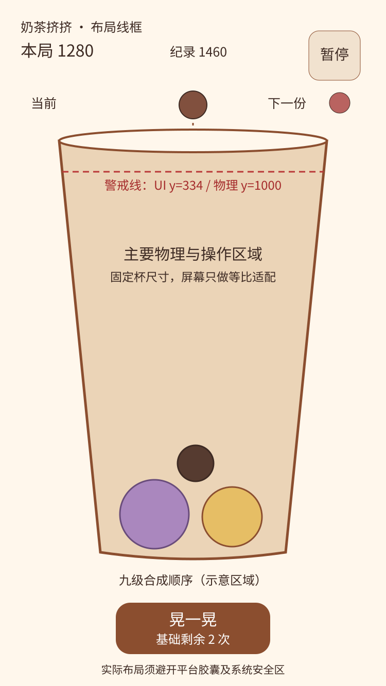

奶茶挤挤 · 项目策划总案
完整需求、物理、美术动画、音频、技术、延期功能与验证计划。数字为待测初值。

项目说明与设计基线
1. 一句话说明
《奶茶挤挤》（开发名称）是一款在透明奶茶杯中投放、碰撞并合成小料的竖屏小游戏。玩家通过选择落点、观察滚动和有限晃杯，合出更大的小料并争取更高单局分数。
2. 当前已确认的方向
| 项目 | 确认内容 |
|---|---|
| 用户场景 | 空闲时可以快速开始、暂停、回来继续；不依赖长剧情或大量角色 |
| 核心玩法 | 同等级小料接触升级，空间逐渐紧张，杯满后结算 |
| 操作 | 单指左右拖动、松手投放；按钮晃杯 |
| 主题 | 西米、红豆、珍珠、椰果、仙草、布丁、芋泥、麻薯；容器是奶茶杯 |
| 画面 | 立体质感的 2D；固定主视角，2D 物理，不做真实三维杯内空间 |
| 首发平台 | 抖音小游戏；其他平台保留迁移可能 |
| 主体 | 个人，目前无营业执照 |
| 关卡 | 从经典款开始，前一款单局最高分达标后永久解锁下一款 |
| 重玩 | 每款不限次数；每局仍会结束，不设置体力限制 |
| 分享激励 | 合适的录屏分享成功后奖励一次额外晃杯，账号每日最多五次 |
| 商业化 | 测试版不接广告；接受未来评估自愿激励广告，具体奖励尚未决定 |
| 第一版 | 只做经典款可玩闭环，其余功能登记后续实现 |
游戏名先作为开发名称；正式使用前检查重名、权利与备案材料一致性。当前没有完成名称可用性确认。
3. 三个体验支柱
1. 看得懂：落点、同级关系、危险位置清楚，玩家能理解结果。
2. 碰得舒服：滚动、轻弹、合成和晃杯有明确反馈，无穿透、无瞬间飞散。
3. 愿意再来：个人纪录、解锁目标与漂亮连锁形成动机；不把分享设置为正常游玩的前提。
4. 项目边界
• 一张主要场景、一套九级小料；第一版没有人物移动、剧情、经营排班或多人实时同步。
• 立体感来自统一光照的贴图/插画、少量阴影和表现变形；不引入真实液体、软体求解和真实食材化学反应。
• 合成是“小料升级”的游戏规则。两份红豆变成珍珠不描述为现实烹饪过程。
• 奶茶颜色和口味为视觉与关卡主题，不意味着每关需要重做九套素材。
• P1 的内部本地测试与 P3 的公众发行是不同交付阶段。
5. 面向非专业使用者的术语
| 术语 | 含义 |
|---|---|
| GDD | 玩法与系统说明，回答玩家做什么、为什么、何时结束 |
| 刚体/碰撞体 | 计算运动的对象及其用于接触判断的简化轮廓 |
| 固定物理步 | 按统一时间间隔更新运动，屏幕帧率改变时不随意改变规则 |
| 精灵/图集 | 2D 图片及将多张图片合在一起的资源组织形式 |
| 标准局/助力局 | 只用基础晃杯的局；使用了奖励晃杯的局 |
| 规则版本 | 杯形、半径、概率、计分等关键规则的一组版本标识 |
| 幂等 | 同一事件重复收到，也只产生一次计分或奖励 |
| 初值/假设 | 尚待测量和试玩的起点，不是正式验收通过的结果 |
6. 交付原则
本次完成的是可追踪的设计资料及配置，而非已运行游戏。技术选型是基于当前平台与范围的建议。未来如改为原生独立游戏、加入杯子旋转或真实三维空间，应重新评估引擎、物理和关卡平衡。
需求规格与范围追踪
状态说明：本表所有游戏功能当前均为未实现。P1 是本地可玩测试，P2 是抖音封闭测试，P3 是完整首发，P4 是扩展运营。设计文档完成不等于功能完成。
1. 功能需求
| ID | 功能与玩家行为 | 最早阶段 | 可验证的完成条件 |
|---|---|---|---|
| FR-01 | 竖屏主界面与经典奶茶入口 | P1 | 小屏与长屏上可进入游戏，核心控件不被安全区遮挡 |
| FR-02 | 九级小料及合成预览顺序 | P1 | 所有等级能区分，图标顺序与配置一致 |
| FR-03 | 单指拖动、松手投放 | P1 | 一次有效松手最多投放一次；UI 点击不误投 |
| FR-04 | 下一份小料预告及固定随机流 | P1 | 预告与实际一致；重载不重新抽取已确定的小料 |
| FR-05 | 重力、碰撞、滚动、睡眠 | P1 | 规定试验场景无穿杯、无持续非预期抖动 |
| FR-06 | 同级合成及连锁 | P1 | 两个父对象只参与一次合成，新对象等级正确 |
| FR-07 | 计分与个人最高分 | P1 | 逻辑事件计分唯一，重新打开仍保留本地纪录 |
| FR-08 | 每局基础晃杯两次 | P1 | 只在允许状态使用；重开恢复两次，续局不补回 |
| FR-09 | 杯满危险倒计时与结算 | P1 | 排除短暂弹起和投放预览，持续越线达到规则时长才结束 |
| FR-10 | 暂停、恢复、退出确认、重开 | P1 | 暂停时物理和危险时间不推进；重开不受旧回调影响 |
| FR-11 | 本地续局与损坏存档恢复 | P1 | 从最近完整快照恢复，不制造分数、小料或机会 |
| FR-12 | 基础画面、落地/合成动画及音效 | P1 | 碰撞轮廓与可见小料相符，动画不改变真实位置 |
| FR-13 | 音乐/音效独立设置、弱动态选项 | P1 | 设置保存；静音不影响规则，后台不继续发声 |
| FR-14 | 新手轻引导 | P1 | 初次只教投放、同级合成、晃杯、警戒线；可跳过 |
| FR-15 | 抖音登录、运行周期与必要能力 | P2 | 真机开局/切后台/恢复/侧边栏回访等实际通过 |
| FR-16 | 录屏与发布基础接入 | P2 | 可录真实游戏片段、取消、重试；未接奖励时不承诺领奖 |
| FR-17 | 隐私、实名/防沉迷及发行材料适配 | P2/P3 | 依当时平台要求核对并通过相应真实审核 |
| FR-18 | 五款奶茶菜单、永久解锁 | P3 | 前款有效单局最高分达到门槛后解锁；不消耗分数 |
| FR-19 | 发布录屏奖励晃杯 | P3 | 新内容成功发布才发一次；取消/失败/重复回调不重复发 |
| FR-20 | 每日最多五次奖励与券库存 | P3 | 跨设备并发领取仍不超过五次；服务端北京时间跨日 |
| FR-21 | 标准/助力两类成绩 | P3 | 首次使用奖励券前提示，整局助力标记不可清除 |
| FR-22 | 分款排行榜及验分 | P3 | 每人每款每榜最高有效成绩；规则版本分隔、同分并列 |
| FR-23 | 身份绑定、云存档与本地迁移 | P3 | 同账号换设备可恢复；冲突与奖励余额不以客户端覆盖 |
| FR-24 | 成绩卡片与挑战入口 | P3/P4 | 卡片内容真实，打开进入对应目标，过期状态有说明 |
| FR-25 | 每日同题挑战 | P4 | 固定序列、规则、投放数；与经典随机分数分开 |
| FR-26 | 异步好友挑战及挑战小榜 | P4 | 同一挑战条件比较；截止前暂领先、截止后定胜负 |
| FR-27 | 图鉴、成就、杯子外观 | P4 | 装饰不改变标准榜碰撞参数，来源与解锁条件明确 |
| FR-28 | 自愿激励广告 | P4 | 不自动播放；奖励和额度先定案，实际完成后唯一发放 |
| FR-29 | 运营数据与问题反馈 | P2/P3 | 采集范围最小；事件可去重，测试与真实用户分开 |
| FR-30 | 微信/TapTap 移植评估 | P4 | 对应 SDK、资质、分享策略和物理一致性分别验证 |
2. 非功能要求
• NFR-01：逻辑与表现分离，固定 60 Hz 物理；30/60 Hz 画面档不改变计分、概率和危险时长。
• NFR-02：目标为主流真机稳定 60 FPS；较弱设备可用 30 FPS 表现档。阈值为待测预算，详见技术分册。
• NFR-03：碰撞、合成、计分、奖励和存档均有稳定事件/会话标识。
• NFR-04：素材合法可追溯；公开文字不借用未授权奶茶品牌、角色或音乐。
• NFR-05：信息不只靠颜色或声音传达；危险有文字/图形，重要操作有可见按钮。
• NFR-06：禁止读取或上传通讯录来构造好友关系；平台身份、头像等按授权和最小化原则使用。
• NFR-07：本地测试不承诺防修改；联网排名与经济库存使用服务端校验。
• NFR-08：测试、物理后端、配置版本与成绩证据可追踪；未实测项明确为未执行。
3. P1 明确不实现
不实现五款奶茶解锁、真实平台登录、真实分享/广告、奖励券、云存档、联网榜单、每日挑战、好友对战、付费或购买。对应 FR-15～FR-30 均保留，在 延期清单 中安排依赖和验收。P1 不展示会被误认为已生效的“分享领奖”或“全球排名”按钮。
4. 需求变更
新增和变更记录到 决策日志，填写影响的 FR 编号、参数、存档兼容性和验证。需求状态仅在代码与对应证据存在后改为已实现/已验证。
完整玩法设计 GDD
1. 核心循环与目标
选择落点 → 松手投放 → 观察滚动接触 → 同级升级 → 腾出空间与加分 → 再次投放。晃杯是有限的布局调整，不保证合成。
• 短期目标：让一对同级小料接触，产生舒服的合成反馈。
• 单局目标：提高分数，尽可能合出麻薯，避免杯满。
• 长期目标：刷新各款纪录、解锁下一杯、挑战朋友与每日同题。
• 单局预计适合数分钟游玩；实际时长由试玩决定，不通过未经验证的倒计时强行截断经典模式。
2. 小料表
九级顺序和得分以配置为准。半径为 750×1334 逻辑设计坐标中的初值。
| 等级 | ID | 名称 | 半径 DU | 被合成生成时得分 | 份数当量 |
|---|---|---|---|---|---|
| 1 | sago | 西米团 | 18 | 0 | 1 |
| 2 | red_bean | 红豆团 | 24 | 10 | 2 |
| 3 | small_pearl | 小珍珠 | 32 | 30 | 4 |
| 4 | coconut | 椰果 | 42 | 60 | 8 |
| 5 | large_pearl | 大珍珠 | 55 | 100 | 16 |
| 6 | grass_jelly | 仙草冻 | 70 | 150 | 32 |
| 7 | pudding | 布丁 | 89 | 210 | 64 |
| 8 | taro | 芋泥球 | 112 | 280 | 128 |
| 9 | mochi | 麻薯团 | 140 | 360 | 256 |
份数当量是检查合成不重复、不丢失的逻辑计量，不等于求解器中的物理质量。所有小料在 P1 使用圆形碰撞代理；椰果/仙草画成饱满圆角形，避免明显方块配圆形导致视觉误判。
3. 投放
1. 当前待投放物在杯口上方显示，尚无动态碰撞体，不参与警戒线判定。
2. 单指在投放区域拖动，只更新横向目标；松手才生成动态小料。辅助提供“点选落点后点击放入”的设置，便于不习惯拖动的人。
3. 横坐标限制在杯口内侧，按当前半径预留边距；不允许拖到屏幕外获得额外动量。
4. 同一触摸事件只消费一次。点击暂停、设置或晃杯等控件时，不触发投放。
5. 最小投放间隔初值 0.45 秒；上一次小料未离开发射区域时暂不能再投。阻塞若持续存在，应正常进入危险判定，不无限等待。
6. 投放后，下一份立即成为当前份，随机流生成新预告。P1 只从 1～3 级中产生，概率初值 55% / 30% / 15%。
7. 随机序列、状态、当前与下一份进入存档。音效变体和粒子随机使用独立随机流。
4. 合成
• 只有已投入杯中的同等级小料可以合成，最高级除外。
• 真实接触产生候选，不能因为图片距离接近就跨空隙吸附。
• 同一物理步存在多个候选时，按等级、距离、稳定对象 ID 的固定排序处理；一个父对象只能被一次候选占用。
• 合成提交时原子消费两个父对象，生成一个高一级对象，记一条事件并加一次分。
• 合成位置、速度与避重叠处理见物理分册。动画与声音不延迟真正的规则结果。
• 新对象可以在后续物理步继续合成。连锁只做视听和纪录反馈，P1 不设置额外倍率。
• 麻薯不再合成，不因触碰另一个麻薯自动消失。首次麻薯给非阻塞庆祝，游戏继续。
5. 计分与纪录
本局分数 = 所有有效合成事件的生成等级分值之和。
• 随机拿到的红豆或珍珠没有初始赠分。
• 投放、等待、分享、剩余机会不加分；不根据广告观看或现实时间给榜单加分。
• 两次西米合成红豆，再把两团红豆合成小珍珠，累计 10+10+30=50 分。
• 标准/助力和不同奶茶分别记录最高单局。P1 只有经典标准局的本地纪录。
• 一局从 256 份一级当量纯合成出单个麻薯的理论合成分为 9680；这只用于公式校验，不是预测玩家平均分。解锁门槛仍需试玩。
6. 晃杯
• 每局基础两次；暂停、结算、加载中不可使用；正在晃动不可重复触发。
• 点击后立即扣除一次，执行约 0.8 秒受控水平外力，期间禁止新投放，现有物理与危险时钟继续。
• 保持自然滚动，不指定必须合成，不瞬移，不让碰撞失效。
• 结束后有约 0.5 秒冷却；弱动态设置只减少装饰晃动画面，不改变真实力和机会消耗。
• P3 奖励机会由服务端库存扣除，一局额外最多五次；基础机会优先使用。续局不能补次数。
7. 危险与结束
警戒线位于杯口下方。投入小料的顶部持续高于该线，危险倒计时累计 3 秒后结束。
• 刚生成的投放物最多有 0.75 秒下落宽限，或第一次接触杯/其他物体后立即参与判定，以先发生者为准。
• 合成子对象继承父对象的判定资格，不因每次合成反复获得宽限。
• 当没有任何合格对象越线时，危险累计重置为零；界面取消提示。
• 同一物理步先处理合法合成，再评估危险。到时仍越线才接受唯一结算。
• 暂停冻结危险；晃杯不冻结；后台恢复不补算离线物理时间。
• 单次弹起越线但不足三秒不会结束；飞出杯外的真实对象应进入一致的越界结束流程，不静默删除后继续刷分。
• 结算时停止输入与逻辑推进，显示“这杯加满了”、总分、最大小料、是否破纪录和“再加一杯”。
8. 状态与流程
| 状态 | 允许操作 | 转移 |
|---|---|---|
| BOOT / LOADING | 设置或失败重试 | 校验资源/存档后进入 MENU |
| MENU | 开始、继续、设置 | 新局或恢复进入 PLAYING |
| PLAYING | 瞄准、投放、晃杯、暂停 | 暂停、危险结束或主动退出 |
| PAUSED | 恢复、设置、确认重开/退出 | 恢复或进入 MENU |
| SETTLING | 等待本地事务/未来验分 | 成功或带重试说明的 RESULTS |
| RESULTS | 重开、回菜单；未来录屏领奖 | 新会话或 MENU |
危险、晃杯、冷却是 PLAYING 内部状态；不要为每个动画创建互相冲突的全局流程。状态转移由唯一会话控制器负责。
9. 新手、设置与可访问性
• 第一次开局最多四条分步提示；每条在相关操作发生后消失，不弹长篇规则书。
• 引导不改变投放序列或给在线榜单虚假分数；如需脚本化教学，使用独立教学会话，不计榜。
• 音乐和音效独立开关/音量；设置持久化。关键事件即使静音也看得懂。
• 危险用刻度、倒计时和文字，不只改变颜色。不要高频闪烁或强制全屏抖动。
• 暂停/重开/返回有明确位置，存在进度时重开确认一次。
10. 持久化与暂停
仅存完整、可校验的步边界快照。包括对象 ID/等级/位置/角度/速度、会话分数、生成器状态、当前/下一份、基础和奖励使用数、危险累计和规则版本。实现细节见技术分册。
当系统来电或进入后台，先暂停会话并保存最近完整快照，清除未完成触摸；回来要求点击“继续”，防止松手补投和音频突发。物理恢复允许与原过程有微小差异，不能把普通对象快照宣称为跨设备逐步精确回放。
物理世界与合成规则规格
1. 采用什么物理规律
普通运动采用统一的重力、惯性、刚体接触、摩擦、有限弹性和阻尼。合成、投放生成、晃杯按钮属于明确的游戏操作或外部事件；它们不需要伪装成真实食材的质量、体积或化学反应。
现实规律负责让结果可理解；人为规则负责让合成能腾空间、让一局有趣。第一版不做流体、浮力、表面张力、软体网格或真实麻薯拉丝求解。
2. 引擎与单位
• 建议使用 Cocos Creator 3.8 LTS 集成的 Box2D 2D 后端。Builtin 仅提供碰撞检测，不能替代本项目的刚体求解。Cocos 官方区别
• DU 表示设计单位，基准视口 750×1334；屏幕缩放不改变物理世界。
• 规格统一以 100 DU = 1 个物理长度单位表示。此为求解器尺度，不声称杯子在现实中高八米。
• 在 PhysicsAdapter 中一次完成 DU 与引擎单位的转换；必须核实安装版本的 PTM_RATIO 与重力 API 语义，禁止在节点、配置和引擎内部重复换算。
• 规格世界坐标原点为左下，x 向右、y 向上；UI 排版坐标从左上计，转换为 y_world=1334-y_ui。
3. 固定步与更新顺序
项目逻辑/物理步初值 1/60 秒。Cocos 官方提供 fixedTimeStep 与求解迭代设置；具体语义以实际安装版本验证。物理步设置
每个步的顺序：
1. 消费一次语义输入，检查投放/晃杯资格。
2. 应用本步晃杯力，更新物理世界一次。
3. 收集接触，不在求解器锁定的接触回调里直接销毁/生成对象。
4. 对合成候选排序、锁定父对象，在安全边界提交合成与计分事件。
5. 检查出界与警戒线，推进或重置危险累计，决定唯一终局。
6. 形成只读表现事件；在合适频率保存完整快照。
不能让引擎自动步进和自定义 step 同时运行。接入 spike 必须记录唯一时钟所有者。渲染降到 30 Hz 时，物理仍按 60 Hz 运行。长帧最多补五步；若无法追赶则暂停并提示恢复，不跳过若干物理步再让物体穿杯。后台不累积追帧。
4. 容器几何
经典杯内部初值，单位 DU，顶口敞开：
| 位置 | 坐标 |
|---|---|
| 左下内角 | (195,260) |
| 右下内角 | (555,260) |
| 左上内角 | (115,1060) |
| 右上内角 | (635,1060) |
| 警戒线 | y=1000 |
| 待投放中心 | y=1130，x 在开口安全范围内 |
• 三段静态碰撞边界组成底与两侧，端点连接无可穿缝。需要厚度时沿杯外扩展，保持内部尺寸不变。
• 杯内宽度从底部 360 DU 线性增加到杯口 520 DU；关卡宽度比例以 x=375 为中心缩放两侧。
• 奶茶颜色、杯身印花和吸管装饰不参与碰撞。
• 投放物初始不与杯沿或已有物体重叠；发射区被堵时不继续堆叠生成。
5. 参数初值与调整边界
以下全部为待验证起点，不是“真实珍珠”的物性参数：
| 参数 | 初值 | 意图与检查 |
|---|---|---|
| 重力 | (0,-9.8) 物理单位/秒² | 映射为约 -980 DU/秒²；落杯速度可观察 |
| 碰撞代理 | 九级均为单圆 | 减少卡角，表现轮廓靠近代理 |
| 小料密度 | 统一相对密度 1 | 质量随面积变化，检查大小对象堆积稳定性 |
| 摩擦 | 0.25 | 能滚动又不持续打滑 |
| 恢复系数 | 0.12 | 轻弹，不成为弹珠台 |
| 线性阻尼 | 0.05 | 不用强阻尼伪造漂浮液体 |
| 角阻尼 | 0.25 | 减少长期自旋 |
| 最大线速度 | 12 物理单位/秒 | 极端合成与晃杯的稳定性保护 |
| 最大角速度 | 12 弧度/秒 | 防止异常旋转 |
| 求解迭代 | 速度 8 / 位置 8 | 以实际后端支持为准，待压力试验 |
| 静止睡眠 | 开启 | 被碰撞、合成邻居或晃杯时正确唤醒 |
不同小料先共享这些物理参数，材质差异用视听表现。后续若改变摩擦/弹性，必须升级规则版本并重新测排名一致性，不能让皮肤秘密改变物理。
6. 合成的空间与质量约束
同级父对象半径 r，新对象半径 R，配置要求 r<R<sqrt(2)r，使二维占地比两个父对象更小。九级半径表均满足此条件，单次面积释放约为 11%～22%；精确值由配置检查计算。
• 新对象位置采用两父对象的质量加权中心。相同等级等质量时就是中点。
• 初始速度采用父对象的质量加权平均，再做上述速度限制。合成允许耗散能量，不添加随机向上爆炸冲量。
• 相同密度与较小总面积会使新求解器质量小于父质量和，这是明确的游戏压缩规则，不宣称物理质量/能量严格守恒。
• 逻辑份数当量严格相加：1+1=2，2+2=4……128+128=256。这条守恒用来检测重复生成、丢失和重复合成。
• 新对象完整半径立即进入物理，视觉可以稍后完成膨胀动画。不能让动画小碰撞体穿进缝隙再突然长大。
• 生成中心应投影到满足半径余量的杯内区域。若与邻居有轻微重叠，由求解器处理并记录穿透量；不通过删除邻居、禁用碰撞或远处瞬移来腾空间。
• 深度重叠、无法恢复的投影或穿透应作为 bug 保留现场；该局暂不提交在线榜，不伪造成功结算。
多接触候选按固定键排序；同一步内每个父 ID 最多消费一次。为连续接触维护接触对集合，避免某个候选被占用后，另一对永远等不到新的 begin-contact。
7. 晃杯力模型
杯的逻辑碰撞边界保持固定，在杯的参考坐标里对所有已投入小料施加周期水平外力：
a(t)=3.2 × sin²(πt/T) × sin(2πft)，初值 T=0.8 秒、f=2.5 Hz。
每步对对象施加 F=m×a(t)，因此不同质量受到相同的外加加速度；由接触与摩擦决定后续差异。该模型是受控游戏晃杯，不声称精确模拟真实人的手臂轨迹。
• 力在固定步施加；不按渲染帧反复施加一次性 impulse。
• 单次最多一条有效晃杯命令，完整消耗只发生一次。
• 可见杯与小料一起有小幅装饰偏移，物理相对关系不受贴图动画篡改；偏移幅度初值不超过 6 DU。
• 晃杯会唤醒睡眠体，结束不强行把速度设为零；保留自然余动。
• 复现失败时记录强度、开始 tick、对象集合与会话版本。
8. 危险与越界的几何判定
圆心 y 加半径大于 1000 DU 即为越线，按 GDD 的资格与 3 秒连续危险规则处理。暂停不计时；合成不重置资格；晃杯不暂停危险。
从敞开杯口飞出的真实对象，在离开杯体且持续 0.5 秒未回到有效区域后进入“有小料洒出了”的终局；这是与杯满不同的可见原因，不能悄悄回收。底部/侧壁穿透不当成普通失败，应标注物理错误并保留诊断。
9. 不采用的真实物理
没有浮力、真实黏附、真实弹性网格、液体流动与不同密度沉降。麻薯拉伸、果冻颤动都是局部表现动画；不改变碰撞体。
10. 必须通过的实验
自由落体与单次碰撞、同级三连触、大小物体高堆、杯壁滑落、底角堆积、最大速度撞壁、连续晃杯、警戒线合成、暂停/恢复、存档恢复、30/60 Hz 渲染一致性。记录构建、后端、设备、参数和实际结果。尚未运行，详见 验收用例。
Box2D 新版官方文档支持固定步、力与冲量等原理参考，但当前页面版本不等于 Creator 集成后端版本；只迁移原则，不直接复制其 C API。Box2D Simulation
画面、UI 与动画制作规格
1. 美术方向
关键词：温暖奶茶店、柔和烘焙色、食材可口、圆润有体积、干净可读。固定正面视角，杯口使用轻微椭圆表现厚度。奶茶背景层与杯内小料分离，所有等级始终可见。
不使用真实奶茶品牌标志、不混用写实照片与卡通小料。关卡换底色和印花，不改变标准模式的碰撞轮廓。AI 生成图只能作为待审素材，必须完成去背景、轮廓、统一光向和缩小辨识检查后再进入正式资源。
2. 统一视觉语言
| 要素 | 规格 |
|---|---|
| 主光 | 左上约 45°，所有小料一致 |
| 高光 | 软边、面积小，珍珠明显、芋泥柔和；不画镜面环境大倒影 |
| 阴影 | 右下局部阴影，避免每个物体大范围透明阴影叠加 |
| 轮廓 | 饱满、圆角；小尺寸先认轮廓与等级标识，再看纹理 |
| 表情 | 小眼睛/简单嘴形，可选独立覆盖层；不遮挡材质识别 |
| 线条 | 优先柔和边缘；需要描边时所有小料保持同一粗细关系 |
| 背景 | 低对比桌面和简化店内形状；主要细节集中在杯中 |
| 文字 | 可授权商用的中文无衬线字体；常规 UI 不烘焙进图片 |
建议调色 token：背景 #FFF7EC，奶茶底 #D8B58A，深文字 #3D2A23，主按钮 #8B4E2F，辅助底 #F1E2CF，危险 #B93838，芋泥 #AA87BE。这些是项目初值，交付时实际测量文字/背景对比，不因使用了 token 就自动通过。
正文对比目标至少 4.5:1；图形和控件边界目标至少 3:1。不能只靠红绿或相近棕色区分状态。
3. 小料外观合同
| ID | 主要视觉特征 | 额外等级线索 |
|---|---|---|
| sago | 半透明浅色小圆珠聚成一个小团 | 三颗细亮点，浅灰轮廓 |
| red_bean | 酒红豆粒聚成饱满豆团 | 可见豆纹，避免误认珍珠 |
| small_pearl | 黑糖棕色小圆球 | 单个白色高光 |
| coconut | 乳白、饱满的圆角椰果 | 方形内纹，外廓接近碰撞圆 |
| large_pearl | 更大的深棕圆球 | 双层高光及独特表情，不能只放大小珍珠 |
| grass_jelly | 近黑绿色胶冻 | 半透明边缘与弯月亮面 |
| pudding | 淡黄主体、焦糖顶 | 宽圆外廓，不用细脚尖角造型 |
| taro | 淡紫绵密球 | 芋泥旋纹，哑光质感 |
| mochi | 奶白软团、少量粉感 | 居中压痕/小装饰，最大级独特轮廓 |
碰撞圆与视觉主体中心统一。主体主要外轮廓与碰撞代理差异目标不超过半径 8%；装饰超出部分不得暗示可支撑其他小料。最小显示尺寸下检查九级图标并排可辨；小料不需要被单独精确点击。
4. 构图与适配
基准 750×1334 DU，UI 坐标从左上计。物理坐标和真实杯尺寸见物理分册；不要因屏幕变长而放大杯内容量。
| 区域 | 初始布局范围（DU） | 内容 |
|---|---|---|
| 顶部 HUD | y=40～150 | 当前分、历史纪录、暂停 |
| 预览区 | y=160～260 | 当前投放小料、下一份预告 |
| 杯体 | x≈100～650，y=274～1074 | 奶茶杯与物理世界 |
| 警戒线 | y=334 | 默认低存在感，危险时高亮与倒计时 |
| 合成顺序 | y≈1110～1155 | 九级小图标；需要时展开说明 |
| 主控区 | y≈1170～1280 | 晃一晃、剩余次数；不遮挡杯子 |
布局线框见 layout-wireframe.svg，仅说明区域与尺寸，不是最终美术。

• 基准内容等比适配，长屏增加背景留白；短屏调整 HUD/底部间隔，物理杯仍等比，不裁掉警戒线。
• 平台胶囊、刘海、底部手势区域按实际 safe area 留空；顶部右侧不放必需操作在系统胶囊下面。
• 主要按钮有效触摸区在设备显示上至少约 48×48 CSS 像素；转换到 DU 后再布局，不直接把 DU 当设备像素。
• 文字初值：主分数 48 DU、标题 40 DU、正文 32 DU、辅助信息 26 DU；实际小屏检查清楚，无关键截断。
• 横屏不作为主玩法布局；旋转时保持状态并提示竖屏或居中展示竖屏区域，不重开游戏。
• P1 菜单只有开始/继续、设置；不显示假的未开发功能。P3 才出现奶茶菜单、券与榜单入口。
5. 图层与透明规则
从后到前：背景 → 杯背/奶茶底色 → 小料 → 合成局部效果 → 杯前高光 → 警戒提示 → HUD/按钮 → 暂停/结算。
杯前高光覆盖杯面积初值不超过约一成，避免遮住物体接触点。禁止用整杯深色半透明罩制造“真实奶茶”，导致看不清布局。奶茶不参与物理，无液面碰撞。危险提示优先级高于特效。
6. 动画事件表
所有时长为表现初值。逻辑不能等待动画结束才计分或改变碰撞；仅投放输入锁遵循明确游戏状态。
| 事件 | 表现规格 | 时长初值 | 逻辑约束 |
|---|---|---|---|
| 按钮按下 | 缩到 96%，亮度轻变 | 80～120 ms | 不移动触摸区 |
| 投放确认 | 小料预览转为真实对象，小幅提示闪点 | ≤100 ms | 仅一次投放 |
| 普通碰撞 | 沿碰撞法线轻压缩，反向轻拉伸 | 100～160 ms | 仅缩放视觉子节点 |
| 布丁/麻薯落地 | 一次压扁、两次衰减回弹 | 180～260 ms | 不改变刚体半径 |
| 合成 | 父对象消失；新对象从 85% 到 108% 再到 100% | 180～240 ms | 生成时已经是完整碰撞体 |
| 连锁 | 逐级增强局部光圈和音调，最多显示“连锁×5+” | 随事件 | 不增加额外分数 |
| 晃杯 | 杯和内容一起小幅装饰摇动，配真实水平外力 | 800 ms | 与物理分册一致，不改位置权威 |
| 危险 | 线条缓慢呼吸、3 秒数字提示 | ≤2 Hz | 非高频闪烁 |
| 首次麻薯 | 局部星光和轻提示“麻薯到位” | 600～900 ms | 不遮盖杯口，不暂停物理 |
| 杯满结算 | 界面淡入、保留最终奶茶杯布局 | 200～300 ms | 先锁定唯一终局 |
| 解锁新款 | 卡片解锁、简短亮边 | 350～500 ms | P3 才启用 |
表现缩放幅度一般控制在 8% 内；麻薯专项初值最多 12%，必须在实际碰撞录像中检查无明显错位。弱动态模式关闭装饰屏幕位移、减小粒子和缩放，保持物理和分数一致。
粒子：普通合成 4～6 个，单次最大 10 个，同时显示预算 48 个，超过预算减少装饰，不丢失合成逻辑。P1 不做全屏闪白、镜头绕杯和长时间慢动作。
7. 素材交付规格
• 源文件保留可编辑图层，sRGB；小料按真实主体居中，统一中心 pivot。
• 小料母版建议 1024×1024 透明 PNG；运行时按实际尺寸导出 128/256/512 级别，不将所有资源无差别导入 1024。
• UI 图标母版可用 SVG；导入游戏前确认引擎支持，必要时导出透明 PNG。SVG 不是所有小游戏运行时都可直接使用的纹理格式。
• 运行时图集优先 1024/2048，透明边缘保留 2～4 像素 padding；具体平台压缩格式实测。
• 纹理不包含文字版号、计分、动态次数。压缩后的边缘不出现黑边、白边和预乘错误。
• 命名：spr_ing_<id>_base.png、ui_<name>_<state>.png、fx_<event>_<variant>.png。
• 资产规格见 asset-manifest.csv，实际交付状态看intake_status；已收到资源的检查与缺件见 素材复核报告，可从 素材库 取用。入库不等于引擎验收或最终锁版。
8. 美术验收
九级灰度剪影与彩色并排辨识、360/375/430 逻辑屏宽下的实际尺寸、完整杯满截图、压缩后透明边缘、静音录像、弱动态模式、录屏压缩后的接触点和警戒线可读性。不得仅凭单张精美大图判定完成。
音乐、音效与混音规格
1. 听觉方向
目标是温暖、轻巧、略有食物弹性的奶茶店体验。主要声音是短促的“啵”、柔软的落杯、轻微玻璃质感和克制的奖励音。避免湿黏夸张到令人不适，也避免碰撞像金属、爆炸或老虎机。
声音帮助玩家理解投放、合成和危险；静音时也必须完整可玩。音频播放、加载失败或设备延迟不能改变计分、碰撞、危险时钟。
2. P1 音频清单
| Cue | 触发事件 | 设计要求 | 数量/时长初值 |
|---|---|---|---|
| bgm_classic | 开始/继续经典局 | 无人声、低干扰、可无缝循环 | 1 首，60～90 秒 |
| ui_tap | 有效按钮 | 轻柔确认，避免每次都尖锐发亮 | 2 变体，40～100 ms |
| drop | 小料从预览投入 | 短促轻落声，声音不抢合成 | 2 变体，70～140 ms |
| collision_soft | 达到阈值的接触 | 糯、软，有轻微重量感 | 3 变体，80～180 ms |
| collision_pearl | 珍珠类明显接触 | 更清晰但不硬的“啵” | 3 变体，70～160 ms |
| merge_small | 生成 2～4 级 | 清楚、轻快、短尾 | 3 变体，120～220 ms |
| merge_large | 生成 5～8 级 | 厚一点的主体加轻亮尾音 | 3 变体，160～300 ms |
| merge_mochi | 生成麻薯 | 温暖的短和弦与柔软弹声 | 1 个，500～800 ms |
| shake_start | 晃杯命令被接受 | 简短杯身摇动/小料滚动 | 2 变体，500～800 ms |
| danger_tick | 危险每整秒变化 | 克制、不惊吓，配可见倒计时 | 1 个，70～130 ms |
| result | 唯一结算事件 | 不责备玩家的短下行收束 | 1 个，400～700 ms |
| record | 刷新个人纪录 | 简短正向提示，优先于普通 result | 1 个，350～650 ms |
后续：解锁、分享成功、奖励入库、券使用、挑战获胜/平局各一组，列入音频清单但 P1 不制作或不接入。
3. 音乐创作 brief
• 初值 84 BPM，4/4；明亮、温和的五声音阶动机，和声稀疏。
• 主音色：柔和电钢琴/木琴、小量弹拨、轻刷节奏；低频克制，手机扬声器也能听到主旋律。
• 不用人声、著名旋律、强烈鼓点或持续高频铃声。
• 用 4/8 小节为单位构造段落，首尾衔接无突变，循环连续听 10 分钟检查疲劳。
• P1 一首足够。五款奶茶后续可共享主题并换少量音色，不预设五首独立长配乐。
• 危险时音乐轻降音量，不突然切战斗音乐；结束后淡出约 300 ms。
• 音乐只是氛围，不需要节拍同步输入或强制玩家开声音。
4. 总线与混音初值
只保留 Master / Music / SFX 三类，UI 作为 SFX 的高优先级子类。P1 无对白，不需要 FMOD/Wwise 或复杂自适应音乐中间件。
• 用户初始 Music 35%、SFX 70%，独立保存；这不是素材本身的标准化响度。
• 音乐母版初始目标约 -20～-18 LUFS-I，最终峰值不高于 -1 dBTP；作为本项目混音起点，不宣称是平台强制标准。
• SFX 做峰值与主观听感匹配，通常峰值低于 -3 dBFS；最终总混音不削波。
• 麻薯、纪录等重要提示可让音乐临时下降约 4 dB，恢复约 300 ms。
• 大量合成时优先顺序：危险/重要 UI → 麻薯/合成 → 投放 → 普通碰撞 → 环境装饰。
• P1 总并发声部初始上限 8，其中音乐 1。超限时回收低优先级碰撞声，不叠成噪声墙。
5. 碰撞节流与连锁
• 接触相对法向速度低于初值 0.5 物理单位/秒不播放碰撞声，静止接触不重复播放。
• 每个对象碰撞声最小间隔 120 ms；普通碰撞全局初值最多 6 次/秒。
• 合成事件只播放一条主 cue；同一次父对象接触不再叠两条碰撞声。
• 同一投放后连续合成可按五声音阶升高，最多五档后保持；不无限升到刺耳音域。
• 音效变体选择无立即重复，轻微音高/响度变化只使用表现随机流，不能消耗小料掉落随机数。
6. 文件与加载规格
| 类型 | 制作母版 | 运行时初始方案 |
|---|---|---|
| 短音效 | WAV，48 kHz，24 bit，保留剪辑工程 | WAV PCM16，44.1 kHz，单声道；先验证 Cocos/抖音兼容 |
| 音乐 | WAV，48 kHz，24 bit，立体声与无尾循环版 | MP3，44.1 kHz，约 96 kbps；循环缝隙实测 |
• 关键短音效在进入游戏前预热，不能第一次合成时同步解码卡住逻辑。
• MP3 如出现可闻循环缝隙，按目标运行时支持改格式或做双源交叉淡化，不能只凭剪辑软件无缝就判定通过。
• P1 运行时音频下载总量软预算 2 MiB 内；解码后内存另算，压缩文件小不代表内存小。
• 用户首次点击后启动音频；被系统限制时静默降级，不阻塞游戏。来电、切后台、切音频设备要正确暂停/恢复。
• 切后台期间不排队积攒音效；恢复只还原当前音乐状态，不补播过去的碰撞。
• 音频源和资源有会话所有者，重开/销毁后释放，避免十次重开叠十首音乐。
7. 来源和版权
所有文件记录作者、取得日期、原始链接、许可、是否可商用与改编。可使用原创录制/合成或授权音库；AI 音乐也需要保存工具当时的使用条款与项目来源。未核实许可的曲子只做内部草稿，不进入公开包体。
8. 音频验收
手机外放、耳机、低音量、静音、同时合成、连续晃杯、后台恢复、十次重开与录屏都要听测。检查清楚、无削波、无突然大声、无烦躁重复、无循环接缝。响度工具通过不等于听感已验证；本轮未生成音频、未听测。
资源表：audio-manifest.csv。技术使用 Cocos 自带 AudioSource/音频管理封装，参考 官方文档。
技术选型与架构
1. 建议与备选
建议：Cocos Creator 3.8 LTS + TypeScript + 引擎集成的 Box2D 2D 物理。具体编辑器补丁版、后端 JS/WASM、构建模式在 P1 spike 后写入工程配置和验证记录；本轮未安装或锁定运行环境。
| 方案 | 适配本项目的优势 | 代价/限制 | 判断 |
|---|---|---|---|
| Cocos Creator + Box2D | 场景/UI/动画工具完整；有抖音、微信构建路径；刚体堆积无需自写求解器 | 需要编辑器、节点资源绑定和真实小游戏适配 | 当前推荐 |
| Phaser + Matter.js | JS/TS 网页原型直接；Matter.js 可做刚体堆积 | 浏览器可运行不等于抖音可直接发布，平台适配和编辑工作需另核实 | 若项目转为 H5 优先，可重新考虑 |
| Unity + 对应小游戏转换方案 | 编辑器和资源生态可用，未来重 3D 更合适 | 对当前一屏 2D 目标增加构建与运行负担，仍要平台接入 | 当前不优先 |
| 自写 Canvas + 碰撞 | 展示原型轻 | 稳定堆积、连续接触、摩擦、休眠和恢复容易反复造轮子 | 不作为生产方案 |
不同时引入 Cocos Box2D、Matter.js 和 Planck 求解同一物理世界；框架版本不按 GitHub 星数选择。Phaser 当前主分支已涉及 4.x，不照搬旧教程的 3.x API；若采用它，必须重新锁定版本。
官方运行时源码仓库：cocos-engine、Phaser、Matter.js。Creator 编辑器条款与引擎源码许可分开核对，不能把一部分许可推广为所有工具、插件和素材都相同。
2. 一个核心，若干适配器
建议工程目录（未来实现，不代表这些脚本已存在）：
assets/
scenes/ Boot、Menu、Game
prefabs/ Ingredient、Cup、HUD、Results
scripts/
core/ Session、Score、MergeRules、Rng、RunCommands
physics/ PhysicsAdapter、ContactRegistry、MergeCommit
presentation/ IngredientView、HUD、VfxPool、AudioManager
persistence/ SaveSchema、LocalSave、Migration
platform/ LocalAdapter、DouyinAdapter
services/ 后续 API、奖励、榜单客户端
resources/config/ 从设计基线导入的带版本配置
art/ audio/core 尽量不依赖场景节点和 tt。PhysicsAdapter 负责坐标、后端与安全物理步；平台接口负责登录、存储、录屏、广告和生命周期。表现层订阅逻辑事件，不拥有分数或奖励余额。
P1 用 LocalAdapter；缺失平台能力时明确标记不可用，不返回假的分享成功、广告完成或全球排名。
3. 权威与事件
每局唯一 runId、每个实体唯一 entityId、每条合成唯一 eventId、每次场景生命周期有 epoch。字段都可序列化。
核心事件：RunStarted、IngredientDropped、MergeCommitted、ShakeConsumed、DangerChanged、RunEnded、SaveCommitted。后续增加 ShareRewardGranted、CouponConsumed、ScoreVerified、StageUnlocked。
• 合成/计分事务同一次提交；重复回调不再计分。
• 广告或分享异步回调必须核对当前账号、请求和 epoch；旧局结束后不能回调到新局。
• 所有定时由明确系统拥有，暂停/离开时释放或冻结；不为 UI、物理各启动一个危险倒计时。
• 规则版本包含小料半径、概率、杯形、晃杯、计分、后端等版本摘要。只改背景颜色不必改变竞技规则版本。
4. 本地存档
数据包括 schemaVersion、rulesVersion、runId、revision、完整实体快照、分数/最大小料、当前与下一份、随机状态、dropIndex、机会、危险累计、逻辑 tick、设置和各款纪录。
采用双槽 A/B：写完整新 revision 与校验值 → 回读校验 → 切换当前索引；异常时回退到上一个完整槽。校验值用于发现损坏，不把它当反作弊签名。先保存最近完成的事务快照，不能在锁定物理回调中读取半成品。
活跃时按完整边界约 2 秒保存一次，暂停/后台/结算再保存。界面说“从最近保存处继续”，不承诺强杀进程绝不丢最后一秒。快照损坏要告知玩家并提供恢复备份或新局，不静默清空历史纪录。
恢复完整排序后的实体后才重新连线表现和接触。保存位姿速度不能保存求解器所有内部缓存，需实测恢复偏差；排名局如无法通过权威验证，应保留娱乐进度、标注不计榜。
5. 未来服务端边界
P3 需要平台身份、事务数据库和少量 API；不在 P1 引入生产云服务。优先沿用 TypeScript，数据库须有事务/唯一约束，具体供应商与部署成本在 P3 定案。
逻辑对象：Player、Run、BestScore、StageUnlock、RewardClaim、CouponLedger、ShareContent、Challenge。唯一约束包括奖励请求、内容去重、结算 ID 和用户/关卡/榜类型/规则版本。
接口草案：
• POST /session/exchange：平台临时登录凭证换项目会话；私钥只在服务端。
• POST /runs：下发 runId、规则、随机种子、允许资源。
• POST /runs/{id}/finish：提交操作日志/合成记录并验分，重复提交返回同一结果。
• POST /share-rewards/claim：依据平台支持的成功证据检查新内容、日额度，事务发券。
• POST /runs/{id}/shake：联网助力局消耗券，确认后生效；网络未知状态可查询，不能重复扣。
• GET /leaderboards：按关卡、榜类型、规则版本分页，返回数据时间。
客户端的“success”本身不是不可伪造的服务端证明。P3 spike 必须确认所选发布渠道实际提供的凭据/可核验能力；若无法可靠判定，不能假装已实现强验证，应调整奖励设计或记录风险。
公开榜启用前至少验证资源上限、输入合法性、份数当量、合成路径、计分和终局。高分逐步增加权威重放/复核；完整跨设备确定性尚未证实前，不承诺仅有种子就可精确复现。
6. 性能预算与测试场景
以下是项目软目标，尚未测量；平台硬上限在 P2 以实际文档/控制台核对。未达软预算先定位，不自动改游戏规则或删除物体。
| 项目 | 初始目标 | 测量条件 |
|---|---|---|
| 画面 | 主流档 60 FPS，兼容档 30 FPS | 真机全杯、合成与晃杯、录屏分别测 |
| 帧时间 | 主流档 p95≤20 ms，兼容档 p95≤36 ms | 前台稳定场景采样，不用平均 FPS 掩盖卡顿 |
| 物理 | 固定 60 Hz，不随画质变化 | 同操作日志比较计分、事件顺序与漂移 |
| 输入可见响应 | p95≤100 ms | 点击、投放、晃杯分别录屏测 |
| 包体 | 首包目标≤3 MiB；P1 首次总下载≤8 MiB | 均为自定预算，不是宣称平台统一限制 |
| 内存 | 总峰值初始预算≤256 MiB；解码纹理≤32 MiB | iOS/Android 真机，记录基础运行占用 |
| 音频 | 下载≤2 MiB，总声部≤8 | 密集合成、来电与重开 |
| 粒子 | 同屏≤48 | 超额削减装饰，不丢逻辑 |
| 压力场景 | 200 个动态物体、10 分钟堆积、30 分钟循环 | 是测试负载，不是实际玩法硬上限 |
对象池先按典型量预热，按需增长。逻辑实体数量不得为了 FPS 静默截断。相同等级贴图共享，避免每个小料独立大材质/动态阴影。
P2 记录至少一台较弱 Android、一台主流 Android、一台支持范围内 iPhone，包含型号、系统、抖音版本、模式、构建和配置。没有设备时写未执行，不能以桌面浏览器代替真机。
7. 必须先做的小型技术试验
1. 编辑器可用性、引擎版本、平台导出与物理后端确认。
2. 三种占位圆在杯内稳定堆积、合成，不在回调锁内改世界。
3. 固定步所有权与长帧/后台恢复，验证不能双步进。
4. 九级半径、高密度堆积和晃杯，记录穿透/抖动/危险误判。
5. 本地存档恢复，不增加对象、分数或机会。
通过后再展开正式美术和五款关卡。若引擎在目标环境无法稳定运行，可基于真实失败证据重新比较方案，不因已有文档而强行保留选型。
8. 费用与许可边界
本次未安装引擎、购买资源或启用付费服务。框架开源不等于所有编辑器插件/素材免费；选定工具时检查当前许可。后端、CDN、日志、账号与广告结算费用尚未报价，不能据此承诺固定月成本。P1 无生产后台，降低早期运营负担。
关卡、分享、榜单与运营设计
本册描述 P3/P4 的完整目标。除明确标注的 P1 本地纪录外，所有联网功能当前未实现。
1. 五款奶茶与解锁
| 顺序 | ID | 名称 | 解锁条件 | 杯宽比例初值 |
|---|---|---|---|---|
| 1 | classic | 经典原味奶茶 | 默认开放 | 1.00 |
| 2 | coconut_green | 椰果清香奶绿 | 经典单局最高分≥500 | 0.95 |
| 3 | taro_boba | 芋泥波波奶茶 | 奶绿单局最高分≥800 | 0.90 |
| 4 | brown_sugar | 黑糖厚乳奶茶 | 芋泥款单局最高分≥1100 | 0.85 |
| 5 | mochi_special | 麻薯满满特调 | 黑糖款单局最高分≥1400 | 0.80 |
门槛是待试玩初值。宽度以杯中心缩放，杯高、警戒线、小料半径和得分不随屏幕尺寸变化。不同款式先共用一条合成链，奶茶底色与杯印花不同。
• 接受标准局和助力局的有效成绩解锁。P1 本地纪录未来迁移只用于非竞争进度，经格式与合理性检查后处理，不直接导入公开排行榜。
• 分数不被消费、不累加局数解锁；达到门槛后下一款永久开放。即使最终杯满也保留有效成绩。
• 解锁根据上一款历史最高有效分判定，不要求在本局同时达到若干额外目标。
• 服务器结算通过后才确认云端永久解锁。离线未验证的进度显示待同步，不能宣称已进入正式榜。
• 每款无限重玩，无体力；最高分保留。调整门槛时不回收已解锁款式，规则版本改变时成绩归档。
2. 标准与助力
| 类型 | 资源 | 成绩去向 |
|---|---|---|
| 标准局 | 每局免费晃杯两次 | 该款标准榜 |
| 助力局 | 基础两次，加最多五次额外券 | 该款助力榜 |
只有真正使用额外券才转助力。持有券、发布视频、看过别局广告本身不改变当前局类型。第一次使用前清楚提示；助力标记写入会话与云日志，恢复、跨设备、券过期后仍保留。
不通过“没用完的次数加分”或“看广告加倍率”影响榜单。同款皮肤内部碰撞参数相同。
3. 录屏分享奖励
产品设计：成功发布一段本局新录屏，奖励一张额外晃杯券；账号每日最多五张，所有关卡共用。优先在结算页由玩家主动点击，不阻塞“再加一杯”。
录屏初始采用结算前真实精彩片段，目标约 15～30 秒；没有完整合法片段时不生成假的精彩成绩。具体录制与截取方式由平台 API spike 决定。
状态：可领取 → 玩家调起发布 → 待确认 → 成功核验并发放 / 取消 / 失败 / 今日已满。每个请求、平台可用内容标识、账号和游戏局均有稳定关联。
规则：
1. 每局最多领一次，同一段内容不重复领。重复回调、重试请求、跨设备并发都使用服务端唯一约束。
2. 仅调起面板、取消、超时或没有可验证成功结果，不能显示已成功领奖。
3. 服务端在同一事务里核验内容与日额度、写入奖励流水、增加库存，失败可查询/重试，不由客户端本地加一。
4. 发奖日期以服务端确认入库时的北京时间日期为准；详情与 UI 明示，避免跨日回调归属含糊。
5. 每日领取上限五张，当日券在次日 00:00 失效；历史已使用次数不恢复。失效只影响未用券，不撤销已发生的合法操作。
6. 一局额外最多五次，包括跨日继续的同一局；新一天也不能把该局额外上限叠成十次。
7. 剩余券、今日已领次数、当局已用次数是三个字段，不能用一个数字互相推算。
8. 库存零时仍可正常游玩/重开；不要求分享给指定人数，不以分享才能解锁关卡。
9. 达到日上限后仍可无奖发布或分享挑战，UI 明确不再承诺领券。
官方要求成功分享兑现承诺、同一录屏不重复奖励。录屏审核说明。运营指南的每日五次示例支持设计方向，但不代表所有渠道、所有账号自动开通。运营说明
好友私信邀请与发布录屏是不同能力；不把其他分享渠道的成功回调或规则直接套用。当前奖励证据的服务端核验能力尚需 P3 技术试验确认。
4. 券使用与网络异常
优先使用本局基础机会，用完后玩家主动确认消耗券。券库存由服务端管理；扣券和记录该局 ShakeConsumed 命令用同一事务完成。
• 重复请求返回同一消耗结果，不能双扣。
• 网络结果未知时进入明确等待/暂停状态，可查询确认；不先擅自加晃动再无限重试。
• 迟到结果核对 runId 与 epoch。恢复同一局时按服务端已提交命令执行一次，不作用于新开的另一局。
• 断网仍可继续本地标准玩法；需要在线消耗券时说明不可用，不扣券、不伪造成功。
5. 各款排行榜
主键维度：stageId + rulesVersion + boardType。同一账号在同一维度只保留最高有效单局。
• 分数降序；同分并列，下一名跳过并列人数，例如 1、2、2、4。稳定显示顺序可按提交 ID，但不改变并列名次。
• UI 同时显示前列、自己的位置和邻近玩家，不只展示永远追不上的前十。
• 不同杯宽、物理后端或计分版本不混排；历史榜可查看，不能伪装成当前版本成绩。
• 昵称/头像遵循平台授权，不读取完整通讯录。公开自定义文字若开放，先接对应内容安全能力。
• “超越比例”按真实有效参赛账号计算：严格低于自己分数的人数 / 除自己外有效人数；无其他人时不显示百分比。
• 显示榜单更新时间。离线、待验证和异常成绩分开；不放机器人冒充真实玩家。
• 高分验分和复核路径见技术册。第一版联网测试榜可标记“测试数据”，公开竞争榜待验分落实后启用。
6. 每日同题（P4）
全体使用相同 rulesVersion、杯形、投放序列和基础两次晃杯；固定投放数初值 120，无额外券。次数用完或杯满则结束；最后一份投入后最多等待 5 秒、或达到静止条件即结算，避免无限等动画。
• 可不限次重试，取最高有效成绩。它比较同题优化能力，也奖励练习，不称作首次盲测绝对公平。
• 每天北京时间 00:00 出新题。提交截止先采用当日 23:59:59，开局前显示剩余有效提交时间；未赶上截止的局可继续练习，不进入已封榜当日排名。是否改用跨日宽限属于后续待验证方案。
• 固定种子只是投放相同，不代表跨设备物理一定精确一致；物理后端与版本一致性验证仍需完成。
• 每日序列先验证资源当量和可玩性；不保证每题都必须合出麻薯，挑战目标由题目显式说明。
7. 好友挑战（P4）
从有效成绩生成挑战卡，绑定 challengeId、规则、杯子、投放预算/序列、资源和截止时间；不是让另一人拿随机条件对比。
• 对方打开后清楚看到规则与目标，可选择参与；不强制通讯录授权。
• 双方成绩有效后，高分胜，同分平；未完成不自动称作输。可重试时只显示暂领先，截止后确认胜负。
• 过期卡进入结果/练习，不篡改成另一个未说明的挑战。
• 卡片最多展示必要昵称、真实分数、最大小料和自制奶茶截图；无真实数据不生成“击败99%”。
8. 广告、收藏与版本扩展
用户接受未来自愿激励广告，但广告奖励、日额度和与分享券的关系尚未定案。P4 再决定；不能先把“看视频无限晃杯”写成默认正式规则。基础操作、解锁与退出不以看广告为前提。
外观、图鉴和成就可增强回访，但不改变标准局物理。微信、TapTap 的能力与规则另行适配，不能照搬抖音录屏奖励。
9. 运营指标
初期关注开始→首个合成→结束→再开一局、各款达标分布、晃杯后腾空间/合成情况、退出点。联网后增加分享发起/成功/领奖/带来有效开局、次日回访、奖励异常。
本轮不设未经测量的留存硬门槛。样本数、版本、来源和统计周期必须与数据一起展示；测试号、重试、异常分数单独标记。
延期功能清单与开发路线图
1. 状态基线
本次 P0 交付需求和设计。以下游戏任务全部为未开始，不存在已完成的包体、音频、美术或服务端。阶段顺序是建议实施规划，不能将其当上线日期承诺。
2. 延期功能登记
| 编号 | 保留功能 | 对应需求 | 阶段 | 依赖 | 核心验收 |
|---|---|---|---|---|---|
| BL-01 | 抖音环境与个人主体接入 | FR-15,FR-17 | P2 | P1闭环、开发者权限 | 真机可进入、生命周期恢复、材料要求核对 |
| BL-02 | 录屏与分享基础 | FR-16 | P2 | 平台API与真机 | 真实录制、取消重试、无误导奖励 |
| BL-03 | 其余四款奶茶、菜单与永久解锁 | FR-18 | P3 | P1平衡、版本配置 | 上一款最高分达标解锁、旧款可反复玩 |
| BL-04 | 发布录屏领一次晃杯 | FR-19 | P3 | BL-02、身份、奖励证据 | 真实成功唯一发奖，同段不重复领 |
| BL-05 | 每日五张券与跨日规则 | FR-20 | P3 | BL-04、事务库存 | 日额度全关卡共享、券过期、单局最多额外五次 |
| BL-06 | 标准/助力分类 | FR-21 | P3 | 券使用日志 | 用券前提示、标记不可恢复成标准 |
| BL-07 | 各款双榜、验分与个人附近名次 | FR-22 | P3 | BL-06、后端、规则版本 | 去重结算、同分并列、真实数据 |
| BL-08 | 云存档、身份与本地迁移 | FR-23 | P3 | 平台登录、持久化架构 | 换机恢复、冲突解决、不能刷券/搬假高分 |
| BL-09 | 奶茶成果卡片 | FR-24 | P3 | 截图、有效成绩 | 真布局真分数、分享回流到正确入口 |
| BL-10 | 每日同题及日榜 | FR-25 | P4 | 验分、稳定后端 | 固定题目/预算、封榜、重试取最高 |
| BL-11 | 异步好友挑战及小榜 | FR-26 | P4 | BL-09,BL-10 | 同条件、公平平局、截止与过期说明 |
| BL-12 | 图鉴与成就 | FR-27 | P4 | 稳定事件与存档 | 初次发现正确记录，不重复发成就 |
| BL-13 | 装饰杯、皮肤 | FR-27 | P4 | 美术与权利登记 | 标准局内部尺寸与物理保持一致 |
| BL-14 | 自愿激励广告 | FR-28 | P4 | 商业规则定案、平台权限 | 明确奖励、完成才发、拒看可继续正常玩 |
| BL-15 | 数据分析与反馈入口 | FR-29 | P2/P3 | 平台能力、最小采集 | 测试号隔离、事件可解释、隐私说明 |
| BL-16 | 微信小游戏适配 | FR-30 | P4 | 首个平台稳定 | 独立验证资质、好友榜与分享策略 |
| BL-17 | TapTap小游戏适配 | FR-30 | P4 | 首个平台稳定 | 区分小游戏/H5/APK，接入与性能实测 |
| BL-18 | 独立APK发行评估 | FR-30 | 后续候选 | 长期产品方向与资质 | 先做收益/成本/发行评估，不自动排进首发 |
| BL-19 | 五款差异音色与额外音乐 | FR-12,FR-13 | P3/P4 | 核心音频听测 | 不增加疲劳、资源预算可控 |
“延期”不是删除。未来开始一项时，先补充该项实现说明、负责人、依赖、测试，再修改状态；不以演示按钮代替真实完成。
3. 阶段计划
| 里程碑 | 交付物 | 通过后才能进入下一步的证据 |
|---|---|---|
| P0 设计基线 | 本套文档、配置、研究快照、素材清单 | 链接/编码/参数自洽检查；实际未测项清楚 |
| P1-A 技术试验 | 三种占位小料、杯体、真实Box2D堆积 | 引擎/后端锁定；投放合成、固定步无冲突 |
| P1-B 玩法闭环 | 九级、计分、晃杯、危险、暂停/重开、存档 | 核心规则用例与异常路径通过 |
| P1-C 视听样板 | 经典杯、统一小料、合成动画、基础BGM/SFX | 小屏辨识、轮廓吻合、录屏/听测 |
| P1-D 内部试玩 | 本地可玩包与问题清单 | 5～8人探索性试玩，优先问题处理、证据归档 |
| P2 平台封测 | 抖音适配包、基础录屏、必要能力、设备记录 | Android/iPhone生命周期及压力场景；资质流程真实核对 |
| P3-A 完整内容 | 五款、解锁、身份与云数据 | 解锁与迁移规则、跨设备测试 |
| P3-B 社交首发 | 奖励券、双榜、验分、成果卡 | 并发/重复/跨日/断网用例通过、公开发布材料齐备 |
| P4 按数据扩展 | 每日/好友/收藏/广告或移植 | 每项收益假设、范围和验收先明确 |
4. 工作量和排期方式
P3-C独立负责公众首发验收，P4细分挑战、收藏、广告、多平台四阶段；完整13阶段以 阶段总表 为准，详细方法见 开发交接，操作验收见 45项清单。原BL编号继续保留。
• 技术试验、核心闭环、视听制作、真机验证分别估算；不要把备案等待算作可并行完成的编码工时。
• 当前未知实际编辑器环境、素材制作来源和可投入时间，因此不承诺“几天上线”。P1-A 完成后才能用实际速度估算后续。
• 若需要制作报价，以素材清单逐项询价，源文件/商用权/修改轮次单独写清；后台和平台接入另算。
• 优先顺序：规则正确 → 物理稳定 → 操作手感 → 基础视听 → 可玩反馈 → 完整社交运营。
5. 试玩与版本决策
先解决穿透、错分、重复生成、无法续局等正确性问题。然后观察玩家是否能理解落点、晃杯作用和失败原因。模拟分数或自动测试不能代替“是否愿意再玩”的真人反馈。
若首个经典杯不好玩，不通过增加四款杯子、更多分享弹窗或广告掩盖问题。若核心已经成立，再按 BL 编号逐项推进。
6. 当前最值得关注的五项风险
1. 全杯堆积与合成新对象导致穿透/抖动。
2. 晃杯效果不清楚或过强，变成纯随机救命按钮。
3. 小料轮廓与碰撞不符，玩家误以为触碰却不合成。
4. 录屏奖励的真实成功证据、额度和库存无法可靠核验。
5. 解锁分数与单局时长未经真实用户验证。
测试、试玩与验收计划
1. 当前验证状态
游戏规则、引擎集成、真机、游戏美术、音频和玩家试玩全部未执行。本轮已检查设计文档、链接、清单、参数及学习快照完整性，并用真实浏览器检查阅读版。下列游戏用例是将来执行的测试，不是通过记录。
阅读版验证：Edge/Playwright，1440×1000 与 375×812 视口，12个分册与12个目录链接存在；实际点击物理分册目录后跳转正确；SVG线框已加载，页面无横向溢出，表格在自身容器滚动，最终页面控制台无错误/警告。人工查看了桌面与小屏截图。证据：阅读版记录、桌面截图、小屏截图。这不等于游戏画面或手机真机测试通过。


每条执行记录至少包括：用例ID、构建/提交、配置版本、引擎/物理后端、设备/系统/抖音版本、步骤、预期、实际、结论和证据路径。结论只用通过、失败、未执行、不适用；阻塞说明另外写原因。
2. P1 规则与物理用例
| ID | 场景 | 预期/检查 | 需求 |
|---|---|---|---|
| QA-01 | 拖动、松手、多点、UI点击 | 单次有效输入只投一个，UI不误投；无额外甩动速度 | FR-03 |
| QA-02 | 连续投放与发射区堵塞 | 预告正确，间隔受控，堵塞不叠生物体、不无限免失败 | FR-03,FR-04 |
| QA-03 | 同级两物接触 | 正确升级、份数当量守恒、只加一次分 | FR-06,FR-07 |
| QA-04 | 三个同级同时接触 | 一个父ID不重复消费，留下的对象仍能后续接触合成 | FR-06 |
| QA-05 | 多对同时/连续接触 | 候选顺序稳定，连锁不漏、不双生、不靠动画回调计分 | FR-06 |
| QA-06 | 两个麻薯相接 | 不继续升级、不消失、不加额外分 | FR-02,FR-06 |
| QA-07 | 两次西米→红豆再合成珍珠 | 结果为一个三级，累计50分 | FR-07 |
| QA-08 | 自由落体、底角和斜壁 | 下落方向、滚动、摩擦合理，无穿杯、持续异常抖动 | FR-05 |
| QA-09 | 大小混合高堆与新合成大物 | 无爆炸飞散；记录最大穿透量与后端参数 | FR-05,FR-06 |
| QA-10 | 晃杯连点、冷却与零次数 | 一次扣一次；不能叠加未完成晃动；用完明确禁用 | FR-08 |
| QA-11 | 不同质量受同晃杯外力 | 力按m×a施加；非按渲染帧重复冲量，无强制合成 | FR-08 |
| QA-12 | 临时越线与持续越线 | 不足3秒恢复；连续3秒只结算一次 | FR-09 |
| QA-13 | 投放宽限与合成继承资格 | 预览不算，宽限有上限，合成不能无限重置资格 | FR-09 |
| QA-14 | 倒计时最后一步发生合成 | 先处理合成再判危险；结果唯一可解释 | FR-06,FR-09 |
| QA-15 | 晃杯期间危险/从杯口洒出 | 时间不冻结；溢出显示对应原因；穿壁作为bug记录 | FR-08,FR-09 |
| QA-16 | 暂停、来电、后台5分钟再恢复 | 物理/危险不偷跑，不补投、不补音、不补次数 | FR-10,FR-13 |
| QA-17 | 重开10次、旧回调迟到 | 新runId，不受旧事件修改，无累积监听和BGM | FR-10 |
| QA-18 | 杀进程、损坏当前槽、备份恢复 | 最近完整快照可恢复；分数、随机流、机会不增加 | FR-11 |
| QA-19 | 同一输入在30/60Hz渲染下 | 同规则分数/事件一致；比较坐标误差，不假定逐像素相同 | NFR-01 |
| QA-20 | 长帧、低帧与200体压力 | 无双步进/穿透；超预算时可诊断，不删除实际小料 | NFR-02 |
穿透、重复合成、错分、存档凭空加资源属于规则缺陷，必须修复。重叠容差初值仅做观测报告：轻微数值接触误差可接受，持续明显穿透不可接受；在真实后端测量后再把具体数值提升为门禁，不凭猜测放宽断言。
3. 画面与声音用例
| ID | 场景 | 检查 |
|---|---|---|
| QA-21 | 小屏、长屏、刘海/胶囊/底部手势 | 分数、杯口、警戒线和晃杯按钮全部可见可用 |
| QA-22 | 九级灰度/彩色最小尺寸 | 不只靠颜色；轮廓、表情和纹理能够辨识 |
| QA-23 | 密集合成/压缩录屏 | 接触点、分数和危险仍清楚；特效不遮杯口 |
| QA-24 | 弱动态/静音 | 规则与正常模式相同，关键事件仍有视觉反馈 |
| QA-25 | 外放、耳机、低音量 | 音乐不盖合成、无刺耳重复、无削波或大音量突变 |
| QA-26 | 音频首次播放、设备切换、后台与重开 | 不阻塞逻辑，不补播、不叠曲，设置正确保存 |
4. P3/P4 网络与经济用例
| ID | 场景 | 预期 |
|---|---|---|
| QA-27 | 同一录屏反复发布/请求重放 | 同一内容最多一次奖励 |
| QA-28 | 取消、失败、面板打开即返回 | 不发券、不占日额度，不假报成功 |
| QA-29 | 两设备同时领取第5/6张 | 事务最多发至五张，没有竞态超发 |
| QA-30 | 跨日回调、过期券、跨日续局 | 入库日期一致；过期不能用；单局额外仍最多五次 |
| QA-31 | 券扣除响应丢失、请求重试 | 同一请求一次扣除和一次晃杯，可查询恢复 |
| QA-32 | 助力后读档、换设备 | 不恢复标准标记、不补回券 |
| QA-33 | 达标分数、杯满、重复结算 | 解锁永久且一次，不消耗分数，不重复奖励 |
| QA-34 | 同分、规则更新、非法高分 | 同分并列；版本分榜；异常分待验证不直接公示 |
| QA-35 | 本地纪录迁移/冲突云档 | 不把本地可修改高分直接当正式榜成绩 |
| QA-36 | 每日题目/截止/无剩余投放 | 固定预算；截止后可练习不改封榜；终止等待有上限 |
| QA-37 | 过期/不同规则好友挑战 | 明确显示条件和过期，不虚构胜负 |
| QA-38 | 广告拒看/失败/完成回调重复 | 正常游戏不被锁；仅真实完成唯一发放明确奖励 |
5. 性能记录
至少在完整杯、晃杯连锁、录屏三类场景采样，每种预热后记录约60秒；内存另做30分钟重复开局观察。记录p50/p95/p99、最坏停顿、前台状态、样本数量，不把后台节流数据混进FPS结果。
真实设备/运行模式未测就是未执行。资源压缩后包体小不证明内存小；桌面预览顺畅不证明抖音iPhone顺畅。
6. 探索性试玩
首轮邀请5～8位目标场景相近的成人试玩者，说明是测试，可随时退出。先不口头解释，让其操作，观察首个投放、首个合成、首次晃杯、首次失败与是否主动再开。
记录问题，不把小样本比例外推为市场留存。建议询问：
1. 你认为为什么这两份能/不能合成？
2. 晃杯后发生的变化是否看得懂？
3. 杯满前能否预测危险？
4. 哪次反馈最舒服，哪次最烦？
5. 是否想再开一局，原因是什么？
关卡解锁用新手/熟练两组成绩分布观察。自动策略只能检查规则与极端情况，不能证明真人觉得有趣。
7. 完成定义
P1：适用核心规则无阻断性缺陷，画面/音频基础完成，至少有实际试玩与问题记录；未测试的目标设备明确列出。
P3：除P1要求外，平台必要能力、真实资质流程、奖励并发、验分、云存档和规则分榜完成相应验证；审核通过、正式上线分别记录实际结果。没有完成这些时只能称内部/封闭测试版。
GitHub 技能、框架与官方资料调研
1. 研究范围和证据边界
观察日期：2026-10-26。以当前会话已确定的个人开发、抖音首发、2D立体质感、刚体堆积和轻量运营为筛选条件。
已实际读取 GitHub 仓库元数据、指定 SKILL.md、配套文件和许可证；已完整阅读并保存13份技能、1份Cocos配套参考和4份MIT许可证。来源固定到提交，文件blob标识见 skills-manifest.json，原文保存在 research/upstream/。
这是项目范围的学习快照，不是全局安装，也没有执行外部仓库脚本。技能文本的质量需要人工判断，不能因为叫“professional”或星数高就当作经过生产验证。没有对所选技能做运行时触发评测，不能声称它们已安装、热加载或能自动完成游戏。
框架源码与官方文档用于选型；没有安装引擎、运行示例、做帧率基准或完成小游戏导出。所有性能承诺仍需P1/P2试验。
2. 已读并应用的13份技能
| # | 技能 | 仓库 | 应用于本项目 | 不照搬的部分 |
|---|---|---|---|---|
| 1 | cocos-creator-mobile-game | Fable-Forge/cocos-creator-mobile-game | 先查场景/配置/节点绑定；状态与UI分离；明确编辑器验证 | 仓库标记beta，主例偏微信/Android，不能代替抖音官方规则 |
| 2 | game-designer | edhahn/agent-skills | 动机、输入输出、系统依赖、GDD、边界和调参项 | 默认团队与UE/Godot背景不适用于本项目 |
| 3 | eval-driven-game-development | edhahn/agent-skills | 规则校验与平衡观测分开；假设不能写成通过；试玩不能由模拟替代 | 不为了完整建立庞大平衡CI；本轮不写尚无游戏的模拟器 |
| 4 | 2d-games | vudovn/ag-kit | 图集、pivot、层次、简单碰撞、固定物理步 | 平台跳跃、tilemap和示例动画帧率不是本游戏规则 |
| 5 | game-art | vudovn/ag-kit | 软阴影风格、轮廓/色彩、资源母版、动画与命名 | “移动端某固定素材尺寸”等泛化值按本项目尺寸重定 |
| 6 | game-audio | vudovn/ag-kit | 声音分类、变体、混音、加载和暂停 | 不引用“音频占体验50%”这类无证据表达；不引入战斗/3D音频系统 |
| 7 | mobile-games | vudovn/ag-kit | 触屏遮挡、安全区域、后台暂停、热量和性能 | 不强制同时做横屏；画面30FPS建议不改变60Hz物理 |
| 8 | physics-interaction | jammyfu/open-game-skills | 唯一运动权威、力与冲量、质量范围、保存状态、固定步 | 搬运/投掷箱子的示例转成杯内堆积测试，不复制Godot API |
| 9 | art-bible | jammyfu/open-game-skills | 统一轮廓、调色、生成图验证、皮肤约束 | 不套用任何现有品牌或大作风格指南 |
| 10 | audio-feel | jammyfu/open-game-skills | 逻辑事件→cue；独立表现随机流；并发上限；后台清理 | 不需要复杂分层战斗和对白 |
| 11 | game-state-flow | jammyfu/open-game-skills | 会话ID、epoch、单一状态转移、唯一结算 | 不引入SCXML运行时或多余通用框架 |
| 12 | performance-budget | jammyfu/open-game-skills | 明确设备/模式/场景，采样p95等，区分物理与渲染 | 不把项目目标当行业通用常数或已测结果 |
| 13 | cocos | jammyfu/open-game-skills | 更新/调度/物理的所有权、音频与生命周期、资源释放 | 具体API必须按安装补丁版本复核 |
配套读过：Fable-Forge 的 references/cocos-workflow.md 和 open-game-skills 的共享合同（用于理解方法；本轮仅将实际采用的技能及许可证固定保存）。本地 ui-ux-pro-max 已读取，提取触摸区、对比、安全区、反馈与弱动态原则；其中网页框架、SVG运行时、深色模式等默认建议没有机械推广到Cocos小游戏。
来源仓库与固定提交
• Fable-Forge/cocos-creator-mobile-game，2909edb86273a011b1d877b79bc0eaceb0f6dacb，MIT；提交日期2026-09-15。应用范围窄、易审阅，beta成熟度需保留判断。
• edhahn/agent-skills，ffc6fc4bf1408bc3cac522916bb58e603f39ab45，MIT；提交日期2026-09-07。重点采用设计规格和证据纪律。
• vudovn/ag-kit，549ba3dc2eb1d40fccb5b6d792eba4101c80cd69，MIT；本次固定提交日期2026-08-31。原 antigravity-kit 地址已重定向；技能目录实际为 .agents/skills/。
• jammyfu/open-game-skills，b6847e82aa16e0e00c36b251e1fbf1dd5656456e，MIT；提交日期2026-10-23。只选本项目需要的职责，不激活整个目录。
这些日期是本次固定版本的提交信息，不等于作者对质量或兼容性的保证。快照保留上游MIT许可与作者署名。
3. 各阶段如何继续用技能
• 需求阶段：game-designer + eval-driven-game-development，先说明规则、范围、初值与可测问题。
• 物理阶段：physics-interaction + game-state-flow + Cocos工作流；验证后端、单位和更新顺序。
• 视觉阶段：art-bible + game-art + 2d-games，按素材清单交付和核对实际碰撞。
• 音频阶段：game-audio + audio-feel，先事件表，再素材、混音与设备听测。
• 性能阶段：performance-budget + mobile-games，按真实设备场景记录；不只跑桌面预览。
上游技能中的“始终读取全部文档”“使用某默认引擎”等示例不自动成为本项目的额外要求；用户范围和当前任务优先。
4. 框架比较的实际依据
Cocos Creator / cocos-engine：首选
GitHub README描述了2D/3D、Web与小游戏平台支持。已核对官方3.8文档的2D物理、音频、抖音导出和iOS性能。仓库本次观察默认分支为 v3.8.9，不等于已安装或已验证这个编辑器补丁。
可迁移：场景/精灵/UI、固定步刚体、平台导出路径。不可迁移：官方能力存在不等于本项目无需真机验证。引擎运行时、编辑器、Spine等第三方组件许可必须分别核对。
Phaser：可信备选
GitHub README明确是JS/TS HTML5框架，支持WebGL/Canvas；仓库本次读取默认分支涉及4.x，不能把旧版教程当当前API。
可迁移：快速网页试玩、纯代码迭代和2D资源组织。限制：抖音小游戏不是完整浏览器；当前调研不足以确认“原包直接发布”，适配成本需要真实试验。若首发改为H5，它的优先级会上升。
Matter.js：物理库，不是完整发行框架
GitHub README定位为Web的2D刚体物理，含混合形状、堆积等示例，MIT。
可迁移：物理原型和行为对照。不可迁移：它不提供完整账号、关卡、UI、存档、平台分享和发行链路。已经选择Cocos集成Box2D时不再叠一套Matter世界。
Box2D：原理与后端参考
GitHub和Simulation文档用于理解刚体、固定步、力和接触。当前官方网页是较新版本，不能推断Creator集成版API或跨设备确定性与其相同。
没有采用：区块链/NFT游戏技能、Unreal大型3D工作流、等距地图与寻路工具包。它们虽在搜索中出现，但不对应当前玩法和平台，不为扩大技能数量而引入。
5. 官方资料索引
| 资料 | 支持的决策 | 限制 |
|---|---|---|
| Cocos 2D物理简介 | Builtin只做检测，本项目需要Box2D刚体 | 实际后端仍待锁定 |
| Cocos 2D物理系统 | 固定步、重力和迭代配置 | 示例不是本项目实测参数 |
| Cocos 抖音发布 | 有对应发布路径 | 不代表导出即通过审核 |
| Cocos AudioSource | 可用引擎音频能力 | 编码、循环与后台要听测 |
| 抖音iOS优化 | 设备/模式下分别测内存与性能 | 本项目尚无实测值 |
| 抖音录屏奖励审核 | 成功兑现、取消/重复录屏处理 | 成功证据如何服务端核验仍需试验 |
| 抖音必接能力 | 侧边栏复访；自定义输入相关要求 | 发布前再次核查当前条款 |
| 抖音ICP核准 | 发布与本地测试分开 | 备案周期不等于开发周期 |
| Suika Game 官方玩法 | 左右投放、同类接触、合成和杯满的直接参考 | 不复制素材、品牌、完整表现或代码 |
| Stack 官方商店页 | 一屏、简洁反馈和个人纪录的相邻参考 | 时机堆叠并非合成物理，不照搬规则 |
6. 研究停止点与后续核查
当前资料足以形成可执行P1规划，继续收集通用技能不会替代物理原型。仍需在实施时核实：可用编辑器补丁、集成Box2D版本与单位、目标真机、录屏奖励证据、个人账号实际权限、素材版权和当前发布要求。
没有调用付费生成服务，没有安装GitHub示例依赖，没有运行未知脚本，没有创建外部账号或对外发布。
决策、风险和变更记录
设计基线：v0.1，2026-10-26。所有“初值”均待实现后测量和试玩，不因为本案写得详细就自动升级为已验证。
1. 决策登记
| ID | 决策 | 状态与依据 |
|---|---|---|
| D-01 | 奶茶小料取代水果/团子，杯子为容器 | 用户已确认 |
| D-02 | 立体质感2D、固定主视角、2D物理 | 用户已确认 |
| D-03 | 抖音首发、个人主体 | 用户已确认；微信/TapTap保留后续 |
| D-04 | 首个可玩测试只做经典奶茶 | 用户同意建议，P1范围冻结 |
| D-05 | P1不接广告，未来接受评估自愿广告 | 用户同意；具体广告奖励未决定 |
| D-06 | 分享奖励每日最多五次 | 用户明确要求；落到抖音录屏发布奖励 |
| D-07 | 每款无限重玩、前款最高单局分永久解锁 | 用户目标及已讨论规则 |
| D-08 | 标准/助力分榜 | 已讨论并接受，未来资源不公平时保持区分 |
| D-09 | Cocos Creator 3.8 LTS + TypeScript +集成Box2D | 本轮技术建议，待P1 spike锁具体版本 |
| D-10 | 九级半径、55/30/15概率、得分表、3秒危险 | 设计初值；正确性可测，手感需试玩 |
| D-11 | 所有小料先圆形刚体，共同物性 | 控制P1范围；以后差异物性要升级规则 |
| D-12 | 图鉴/成就/每日/好友/广告/移植登记延期 | 用户明确要求保留，详见BL清单 |
| D-13 | 源技能只读项目快照，不改全局技能目录 | 本轮实现选择；已保存来源与许可 |
| D-14 | 开发名《奶茶挤挤》 | 待名称核查；不是已获得权利或备案名 |
2. 仍需验证的设计假设
| ID | 问题 | 下一步证据 | 当前处理 |
|---|---|---|---|
| R-01 | 圆形轮廓下椰果/布丁是否自然 | 最小尺寸贴图与实际接触录像 | 母版限制轮廓差异，必要时调整外观 |
| R-02 | 最高麻薯是否占得过满 | 全杯、合成麻薯后的继续游玩 | 半径为初值，不能仅凭表格定死 |
| R-03 | 基础两次/额外五次晃杯是否过强 | 不同水平玩家的使用时机与得分分布 | 维持已定资源上限，先调力度与杯容量 |
| R-04 | 五款只缩杯宽是否单调 | 经典闭环后再测五款 | 允许后续小幅杯形差异，不立即增加复杂道具 |
| R-05 | 500/800/1100/1400门槛是否合适 | 新手/熟练玩家分布、尝试局数 | 仅作为配置初值，可调，不回收已解锁 |
| R-06 | 快照恢复对物理的偏差 | 实际后端序列与恢复对照 | 不承诺跨设备精确；公开榜有独立验分 |
| R-07 | 分享成功能否可靠核验 | 平台渠道真实API和服务端证据试验 | P3发布奖励前必须解决或调整设计 |
| R-08 | 个人账号实际变现与发布权限 | 开发者后台与当时官方要求 | 本轮未登录、未认证、未提交 |
| R-09 | 小游戏首包、内存和录屏开销 | 实际抖音Android/iPhone测量 | 软预算不等于性能证明 |
| R-10 | 工具与资源许可 | 选定编辑器、插件、字体、音库条款 | 无未授权资产进入公开包体 |
3. 实施时仍需补齐但不必阻塞当前规划的信息
• 本机可用的Cocos Creator版本和开发者工具环境。
• 可用于测试的Android/iPhone型号。
• 最终视觉资产由原创绘制、委托还是合规生成，以及可投入预算。
• 正式上线名称、版权材料和主体认证实际状态。
• P3后端部署预算与区域、广告具体奖励和额度。
这些是后续相应阶段需要落实的事项，不要求用户现在一次性回答全部。
4. 变更模板
日期 / 版本：
变更原因与证据：
影响需求ID与BL编号：
规则、配置、存档和榜单影响：
实际修改与验证：
尚未完成或未执行：版本数字与发布状态以真实工具/审核结果为准。没有完成包体测试时，不把“设计已完成”写成“游戏已完成”。
分阶段任务、交付与验收总表
交接文档 v0.2｜2026-10-27｜玩法参数仍为 design-v0.1。本文将原 P0～P4 细化为13个可独立验收的阶段，没有宣称游戏已实现。
1. 怎么使用阶段文档
每阶段遵循：输入齐备 → 按任务顺序实现 → 自测 → 形成证据 → 处理失败 → 标记验收结果。可以并行制作美术与核心，但不能绕过它们集成前的依赖。阶段实施状态以本文末尾的当前状态记录为准。
“完成”必须同时满足：代码/资源存在、能从干净工程复现、正常和指定异常路径通过、提交版本与证据一致、无本阶段阻断缺陷。浏览器能打开、编译通过或toast出现只能算部分证据。
2. 阶段明细
| 阶段 | 开发内容与边界 | 必交付物 | 验收门槛 | 详细设计 |
|---|---|---|---|---|
| P0 | 规格、资产台账、数据契约、阶段拆解 | 本套文档、配置、校验报告 | 所有阶段有入口/出口/失败处理，资产唯一ID可追踪，链接及契约检查通过 | P0 |
| P1-A | 工程骨架、版本/单位锁定、静态杯、刚体试验、唯一物理时钟 | Cocos工程、版本锁定记录、PhysicsLab场景、物理报告 | 无双步进；重力转换测试；三圆与压力堆积不穿杯；重开不泄漏 | P1-A |
| P1-B | 九级投放/合成/得分/晃杯/危险/结算、暂停、本地双槽存档 | core与physics模块、单元测试、Game场景、本地存档样本 | QA-01～20适用项通过；50分样例、重复接触、暂停/恢复/损坏存档正确 | P1-B |
| P1-C | 正式经典杯视听、HUD/菜单/设置/轻引导、图集、对象池 | 经典版资源、UI预制体、动画及音频映射、资源授权台账 | 图像与碰撞吻合；所有UI状态齐全；静音/弱动态/后台/十次重开正确 | P1-C |
| P1-D | 内部试玩、回归、平衡观测、性能基线 | 可玩测试包、5～8人探索记录、问题清单、回归报告 | 阻断/高优先级缺陷关闭；无伪造平衡结论；未测设备清楚列出 | P1-D |
| P2 | 抖音登录/生命周期/侧边栏、真实录屏、隐私与资质接入、平台封测 | DouyinAdapter、能力检测表、真机报告、封测包 | 目标真机正常、取消/失败可恢复；必要能力完成；未做奖励不承诺奖励 | P2 |
| P3-A | 五款/解锁、平台身份换会话、服务端数据库、云进度/续局冲突 | 服务端基础、数据库迁移、关卡菜单、云存档、API契约 | 达标解锁且不消费分；身份不可冒用；CAS冲突不丢进度；本地高分不直接入榜 | P3-A |
| P3-B | 录屏奖励、每日券、标准助力分类、操作日志/验分、各款双榜/成绩卡 | 奖励事务、验分服务、排行榜、录屏奖励UI、并发测试 | QA-27～35通过；第六张不得超发；同分并列；未验分不公示 | P3-B |
| P3-C | 公众首发准备、灰度、监控/反馈、版本兼容/回退 | 发布清单、监控配置、回退演练、审核和上线记录 | 无阻断缺陷；资质和审核实际完成；回退不破坏存档/券；真实上线状态可回读 | P3-C |
| P4-A | 每日同题与异步好友挑战 | 题目服务、封榜任务、挑战链接/榜、过期流程 | 同题同资源；截止清楚；重复加入/并发结算正确；无虚构胜负 | P4-A |
| P4-B | 图鉴、成就和外观收藏 | 成就规则/资源、图鉴UI、装饰装备/解锁存档 | 同事件不重复授予；外观不改物理/分数；未获物品不能装备 | P4-B |
| P4-C | 可选激励广告基础设施 | AdAdapter、服务端领奖、配置开关、实际完成验证 | 未定奖励时保持关闭；拒看/无库存可继续；完成不双发、不突破已定券上限 | P4-C |
| P4-D | 微信/Tap小游戏迁移；APK仅另立项评估 | 平台差异表、适配器、独立规则版本、各自发行证据 | 各平台SDK/资质/分享实测；不混不同物理成绩；无假成功降级 | P4-D |
3. 交付包目录和验收记录
每阶段在未来代码仓库使用 evidence/<phase>/<buildId>/，至少提交：
acceptance.md 版本、需求ID、逐项通过/失败/未执行、不适用及理由
environment.json 引擎、物理后端、平台/系统/设备、配置摘要
cases.csv 用例ID、步骤、预期、实际、证据相对路径
issues.md 未解决项、严重度、影响范围、复现与下一步
screenshots/ 可见状态；关键路径优先录屏
metrics.json 需要时的性能/计数/观测结果及采样条件这些目录是将来开发者创建的交付要求，当前不放空报告冒充已验收。静态文档验收报告仍在 research/，与游戏证据分开。
4. 缺陷级别与验收规则
• B0 阻断：无法进入/重开、崩溃、丢档、凭空加分/券、穿杯破坏规则、身份越权、奖励超发。必须关闭。
• B1 高：关键操作误触、危险误判、目标设备持续明显卡顿、静音/恢复失效、分享承诺不兑现。当前阶段适用时必须关闭。
• B2 普通：局部动效、非关键排版、个别提示不够清楚。可带修复计划进入下一阶段，但不能伪称通过。
• B3 建议：新玩法、美术偏好、未验证的增长优化，登记待办，不借此扩大当前阶段。
玩法数值和主观好玩程度没有伪造的“全行业合格线”。正确性是硬验收；性能预算和平衡目标需按记录的样本与设备解释，尚未确认的预算保持报告性质。
5. 关键外部依赖与决策点
1. P1-A 必须锁定实际编辑器与物理后端；接口、坐标和物理回调顺序不得由初级开发者凭印象猜测。
2. P2 必须有可用平台账号、真机和相应权限；没有就标记外部依赖，继续本地任务，不能报告平台已通过。
3. P3-B 必须验证发布成功证据和成绩验证策略的实际可用性；无证据时不得上线“自动领券/权威榜”。
4. P4-C 的广告具体奖励是尚未确定的业务项。开发基础设施可以进行，启用配置必须先定规则；不能为了文档完整擅自给广告无限晃杯。
6. 排期与交接
依赖顺序为 P0→P1-A→P1-B→P1-C→P1-D→P2→P3-A→P3-B→P3-C。P4各阶段在首发稳定后按收益排序，P4-A依赖验分/榜单，P4-B依赖可靠事件，P4-C依赖奖励事务。
初级开发者从 开发交接入口 进入，只实现分配的阶段。先读对应规格和契约，再写代码。若设计数值需要变更，记录规则版本与测试证据，不自行修改玩法常量以掩盖失败。
7. 当前阶段状态（2026-10-27）
P1-A 工程代码与纯逻辑检查已建立；Cocos Creator 未安装，故编辑器打开、Box2D运行验收、截图/录屏和构建均未执行。完整状态与证据索引见 P1-A 验收记录。P1-A 尚未通过，不满足进入 P1-B 的门槛。
初级开发者交接入口
交接版本 v0.2；P1-A 已建立 client/ 下的 Cocos Creator 工程骨架、PhysicsLab 场景源、配置/坐标/时钟核心模块和 Box2D 适配器。当前环境没有安装 Creator，场景导入、运行与引擎物理验收仍未完成；不能把纯逻辑检查视作运行通过。打开步骤见 client/README，逐项结果见 P1-A 证据。
1. 开工顺序
2. 读 公共模块合同 与 TypeScript类型合同。
3. 查 参数配置，不得将半径、分数等再手抄一份硬编码。
4. 创建该阶段要求的文件/场景，遵循任务次序和自测样例。
5. 形成阶段证据，未执行项如实登记。不要把UI演示当真实平台接口完成。
完整阶段设计另提供 开发手册阅读版 和 Markdown合并版。
2. 全部阶段设计
• P0 规格交接
• P2 抖音封测
• P4-D 多平台
3. 契约文件
| 文件 | 用法 | 当前验证边界 |
|---|---|---|
| types.ts | 共享领域数据、命令、事件、适配器接口 | 规格代码，不是已实现模块 |
| OpenAPI | P3/P4请求/响应/错误/幂等约定 | JSON及引用静态检查，不代表API已运行 |
| schema.sql | PostgreSQL表、索引、约束与事务起点 | DDL设计，未对真实数据库迁移 |
| 样例 | RNG、分数、排名、券边界输入输出 | 静态期望，不冒充游戏回放 |
| 配置 | 参数唯一来源 | 初值，未经手感/性能验证 |
| 图像资产清单 | 每个图形的ID、尺寸、状态与制作要求 | 用户另行设计；列表不是现成图 |
4. 目标工程组织
阶段文档中的core/、ui/、physics/、cloud/等短路径均相对client/assets/scripts；server模块短路径相对server/src，数据库迁移统一放server/migrations。阶段表的模块名可描述职责，实际公共接口名以contracts/types.ts为准，不再创建同职责的两套服务。
client/ 未来Cocos工程根目录
assets/scenes/Boot.scene,Menu.scene,Game.scene,PhysicsLab.scene
assets/prefabs/Ingredient.prefab,Cup.prefab,HUD.prefab,Results.prefab
assets/scripts/core/ 不依赖cc/tt的领域规则
assets/scripts/physics/ Cocos/Box2D封装
assets/scripts/presentation/ 场景、UI、动画、音频
assets/scripts/persistence/ 本地双槽与迁移
assets/scripts/platform/ Local与Douyin适配
assets/scripts/services/ HTTP、身份、云存档、榜单
assets/resources/config/ 从根config同步而来
server/ P3创建；建议TypeScript+PostgreSQL
src/{auth,runs,progress,rewards,leaderboards,challenges,catalog,ads}
migrations/ 将contracts/schema.sql转成受管理迁移
tests/ 未来选择一套TS测试工具后创建
evidence/ 各阶段的实际证据既有 docs/assets 是设计资料，不直接当Cocos assets；正式资源按清单导入client，保持.meta与源文件配套。初次实现推荐一个小型core测试工具（可采用Vitest），锁定版本后使用，后续不再引入第二套竞争测试框架。
5. 每个开发任务的完成模板
任务ID与目标：
影响需求与配置：
创建/修改文件：
外部依赖与实际版本：
实现步骤：
正常路径结果：
异常路径结果：
运行命令或编辑器步骤（按真实工程提供）：
截图/日志/测试证据：
剩余缺口：不能猜测 npm run dev 或Cocos自动节点绑定。工程创建后，先在自己的package.json定义并验证实际测试脚本，再在交付说明中引用它。
6. 给设计师的边界
请单独交付素材，不在图片内烘焙动态分数、昵称、次数或倒计时；不生成假的二维码、平台授权标志和广告标识。清单区分“需要新画”“从母版导出”“引擎绘制”“平台提供”。对应制作说明见 图像总规范。
图像制作总规范与完整交付清单
版本handoff-v0.2；本分册保留制作规格。2026-10-27已收到P1～P4交付与补件，最新检查见 补交复查，首次检查保留在 素材复核报告；可浏览 已入库素材。入库不代表最终美术锁版；导线仍不是最终美术。
1. 领取与交付入口
• 可搜索的逐项清单：按阶段、名称和制作方式筛选。
• CSV完整清单：213项，一行一个资产ID，不是只有“UI一套”的模糊报价。
• JSON数据源输出 与 逐项Markdown：同一份生成源。
• 原画方向/动效、音频仍适用。冲突时本文件细化制作规格，玩法数值以配置为准。
137项new_draw是设计母版任务，55项derived是缩略/剪影/分享卡等导出或合成，16项engine由程序画，5项platform由真实平台或授权数据提供。3项表情为可选、2项未来装饰为候选，不是首发强制新增需求。母版可同一个设计源文件分层交付，不能把137误解为137张独立概念稿。一个资产的128/256/512三档导出只算一个ID。
2. 文件合同
目录建议：art-source/<category>/<asset_id>/source.psd或source.svg、exports/、preview/、license.txt。可用PSD/Krita/Affinity等实际可编辑格式，保留图层；PNG不能替代所有可编辑源。字体/笔刷/纹理/参考的授权或原创声明随交付。
命名完全采用清单asset_id，后缀加@128/@256/@512仅用于多档导出；不要中文空格、final2/最终最终。大小写保持小写。所有色彩sRGB，运行时普通8bit RGBA PNG，透明图正确straight-alpha导出，导入后核验预乘设置。
PNG不烘焙分数、昵称、余额、倒计时、动态款名、排名、二维码、系统广告标记。例外为原创标题字标；字体轮廓化也要有使用权。图像未完成时status仍为planned/deferred；授权没拿到仍为not_acquired。
3. 小料九级精确规格
母版1024×1024，主体中心(512,512)，参考圆半径460.8px，四周约5%透明边。运行精灵完整显示边长=2×物理半径/0.9，使主体参考圆直径对应碰撞直径；不能按整张纹理512px当主体直径而缩小碰撞。
各级半径18/24/32/42/55/70/89/112/140DU；最大精灵边长约311.11DU，主体280DU。128档优先用于小物体，256用于中档，512用于最大档/高DPR，不无差别加载1024。
主体外廓偏差目标≤半径8%，椰果的方纹在内部，外廓近圆；布丁不能有细脚支点，西米/红豆团应读作一个完整可碰撞团，不能画成散开的五颗独立物体。大珍珠须单独画，不是小珍珠等比放大。
分层base/texture/highlight/optional_face；左上45度柔光，右下局部暗部，不画大投影。动画压缩精灵子节点，不逐帧重画圆或更改碰撞。
4. 杯体配准
五款可编辑导线：经典、椰香、芋泥、黑糖、麻薯。SVG为1500×2000母版坐标导线，棕线是内碰撞边，红虚线是危险线，紫圆是最高级参考；它们不是最终杯图，不导入正式游戏。


五款每款七层：back、tea、front、rim_back、rim_front、base、label。可在同源文件的七图层导出，不必七份概念稿；每层1500×2000源，750×1000PNG，透明、同画布、禁止自动trim。
其完整画布对应世界x=0..750、y=200..1200；导入节点原点世界(0,200)，左下锚点。像素图顶向下，导出物理点映射pxY=1200-worldY，因此杯底y260在图中940px，杯口y1060在140px，危险线y1000在200px。
经典杯内缘底端(195,260)/(555,260)，顶端(115,1060)/(635,1060)；其他款相对centerX375横向乘.95/.90/.85/.80，纵向不变。让开发者从CupGeometry生成导线覆盖给美术，成图不能自己改杯口宽。
杯口开放无盖，椭圆厚度仅表现。前高光面积约≤10%，不要深罩盖所有小料；茶色仅后层静态底色，不做真实液体、浮力或流体碰撞。杯纹理不能把玩家以为的可支撑区域画到碰撞外。
5. UI和图集
背景750×1334基准，上下延展另图；安全区系统遮挡动态获取。按钮皮肤normal/pressed/disabled/selected逐项列出，其中派生态可在同源文件调色/边缘，不要求另画四套。
九切数值在CSV nine_slice列，顺序left,top,right,bottom，单位为导出PNG像素；先检验左右/上下合计不大于图尺寸。九切只拉伸中间/边，不拉图标和文字。被禁用时开发同步禁点击，不能只变灰。
图标192源→96/48运行，96档笔画至少4px；触摸框≥48CSS等效像素且适配安全区。字号DU不是设备px，实际窄屏复查。正文对比4.5:1、控件边界3:1为目标；按文字实际落点测，不用平均背景色替代。
图集优先1024/2048，2～4像素padding与边缘extrude，由引擎打包；源图不为凑整张图集而合并成不可拆大画。透明纹理内存估算width×height×4，PNG压缩小不等于显存小，禁止用全屏透明PNG代替纯色遮罩。
6. 动效与特效交接
无序列帧为默认：6个特效母版由程序缩放/alpha/旋转。普通合成4～6粒、每次最多10、同时48是初始预算。不得给每级制作几十帧特效大图集再让开发硬加载。
以04分册为时长来源：按钮80～120ms，普通碰撞100～160ms，软料落地180～260ms，合成180～240ms，晃杯800ms，麻薯600～900ms，解锁350～500ms。弱动态关闭装饰位移并减小缩放粒子；危险提示≤2Hz。
音效必须绑定逻辑事件，不绑定“播放第8帧”。若日后确需序列帧，单独审批技术方案/帧数/图集内存，再给新ID，不默认把所有动作交给美术手画。
7. 分享卡与上架素材
分享卡设计基准750×1000，源1500×2000。固定背景由美术提供；实际杯截图、真实分数、最高料、标准/助力标签、头像/昵称、入口码由程序合成。四边留48px，底部预留180px入口区。平台实际接口尺寸以实施时官方要求导出，当前尺寸是项目设计基准，不宣称平台强制值。
图标1024母版，512候选导出，中心80%重要区域；封面方形800、横图1280×720、截图750×1334为通用设计母版。微信/Tap素材属于后续适配，发布前逐项核对后台规范。
上架截图必须来自已实现游戏，不把概念图、假排名或不存在功能当实机。二维码/小游戏码必须真实生成可扫描，不让图像模型或美术画假码；广告标识由平台合法提供。
8. 验收和退回条件
每个交付资产提供asset_id、源文件、运行导出、白/黑/棋盘透明预览、实际尺寸预览、使用权记录；开发导入后回传截图。源文件能开、导出尺寸/透明/锚点正确、圆边与杯导线吻合、缩小可辨才验收。
必须检查：九级并排彩色/灰度、375宽游戏局、杯堆满、危险提示、录屏压缩后的接触点、黑白底透明边、disabled可辨、九切不变形、弱动态、分享文字最长样例。黑边、假支点、烘动态文字、未授权字体、图层裁切破坏配准均退回。
先做九级配料+经典杯+主界面小样验证，再批量五杯与运营图，避免完整画完后才发现不能匹配物理。
仓库交付、维护与验证边界
目标仓库：https://github.com/vinkinyyx/milktea 。用户已授权将奶茶挤挤整个项目上传。仓库根目录直接对应本地奶茶挤挤文件夹，避免再嵌套一层同名目录。
包含与排除
包含README/AGENTS、原策划、13阶段开发设计、数据契约、配置、逐项图像/音频清单、源站技能快照和许可证、生成工具、阅读版及检查证据。
排除.git内部、.playwright-cli临时会话/日志、__pycache__、构建缓存、依赖目录及任何密钥。截图证据和设计压缩包可保留，但不包含浏览器登录状态/账号资料。Git忽略规则见根.gitignore。
复现文档产物
需要Python3，标准库即可：
python tools/build_image_catalog.py
python tools/validate_design.py --build
python tools/prepare_publish.py --archive前两条重新生成清单/阅读版并验证；第三条生成ZIP及文件清单。实际游戏未来须另外安装锁定版本引擎与依赖，不把这些文档命令称为游戏构建。
检查含义
本轮静态检查覆盖链接、配置关系、13份技能快照及上游文件哈希、资产ID/来源/尺寸、阶段存在、API内部引用与例子，检查报告在research/document-validation.json。
浏览器检查仅验证文档/资产目录的显示、跳转和筛选；未执行真实游戏、物理集成、数据库迁移、平台审核、广告验证或玩家测试。
contracts中的TypeScript/SQL/OpenAPI为开发设计起点，不是已启动服务；source_path和API均需开发者按对应阶段实施与实际验证。
版权和更新
THIRD_PARTY_NOTICES.md列上游材料来源和许可证；上游MIT不意味着本项目全部原创内容或Cocos编辑器都自动MIT。未统一声明本项目代码/美术的开源许可证；上传公开GitHub不等于授权所有内容任意商用。
修改玩法先更新配置/规则版本，再同步分册、契约和样例；修改图像台账先改生成工具，再生成CSV/JSON/HTML/Markdown。生成版不手改。
阶段验收操作手册
这是开发者未来执行的用例，不代表当前已测试游戏。每例记录版本、配置摘要、设备/服务环境、实际结果与证据。与09分册的QA-01～38一起使用，覆盖新增接口、并发和资源交付。
| ID/阶段 | 前置与操作 | 应得到的结果与核对点 |
|---|---|---|
| AC-001 P0 | 在项目根运行两条文档生成/验证命令 | 退出0，13阶段/213资产和本地链接完整；未执行游戏项仍未执行 |
| AC-002 P1-A | 无阻尼释放圆0.5/1秒 | 位移约122.5/490DU，记录积分误差；确认未重复转换重力 |
| AC-003 P1-A | 渲染30/60，各跑120tick | 每组物理恰好120步，相同环境输入可复现 |
| AC-004 P1-A | 三圆/九圆静置60秒，重建20次 | 不穿杯；对象/监听回到初值 |
| AC-005 P1-B | seed1逐次投放并读取预告 | 1,1,2,1,2；无效投放不抽随机 |
| AC-006 P1-B | touch从设置按钮开始后移出松手；再双指投放 | 不误投；一次有效主指松手最多一个对象 |
| AC-007 P1-B | 摆3个/4个同级同时接触 | 一步最多1对/2对，无父ID重复使用 |
| AC-008 P1-B | 持续接触被预留阻断的一对，下一步释放另一父 | 能继续检测实际接触，不依赖新begin事件 |
| AC-009 P1-B | 两对1级合成再把2级合成 | 50分；重复发送同MergeCommitted不加分 |
| AC-010 P1-B | 9级相撞；理论256个1级归约 | 前者无合成；归约账本9680，不冒充物理回放 |
| AC-011 P1-B | 合格越线179tick/180tick，期间暂停 | 179不败，180唯一CUP_FULL；暂停不计tick |
| AC-012 P1-B | 新料在出生点/合成子继承父资格 | 普通出生不误败；合成不刷45tick免判 |
| AC-013 P1-B | 基础晃杯2次，第三次；晃杯中暂停 | 第三次拒绝且不扣；恢复剩余tick，不重置 |
| AC-014 P1-B | 写槽A后中断写B；破坏一槽JSON | 读取最高完整槽；不凭空加料/加分/补晃杯 |
| AC-015 P1-B | 重开后旧存档/录屏回调完成 | 新run不受旧epoch回调影响 |
| AC-016 P1-C | 375宽显示九级/杯满，开关弱动态 | 轮廓/文字可辨，弱动态不变物理和得分 |
| AC-017 P1-C | 拖滑杆/弹窗外点击/长文案 | 不穿透投放，不遮关键按钮、不截关键数字 |
| AC-018 P1-C | 音乐关、音效开，后台/重开10次 | 设置保留，无后台声/重复BGM/池化残留 |
| AC-019 P1-D | 固定压力场景采样并真实试玩5～8人 | 原始数据与问题清单，不能只交主观“很流畅” |
| AC-020 P2 | 真机拒录屏/取消发布/切后台/旧SDK | 不领奖不扣券，可重开；能力表标真实结果 |
| AC-021 P2 | 从侧边栏复访、安全区变化 | 不重开原局，不被系统胶囊挡关键按钮 |
| AC-022 P3-A | 前款499/500；重复达标；累计500但最高未达 | 只有单局最高达标永久解锁，不扣分 |
| AC-023 P3-A | 两会话相同expectedRevision同时写 | 一个成功一个409；回读DB的revision+1，不丢永久解锁 |
| AC-024 P3-A | 甲身份请求乙run与checkpoint | 拒绝；乙档案/分数没有变化 |
| AC-025 P3-A | 同Idempotency-Key相同/不同payload | 相同原结果；不同409且无新run |
| AC-026 P3-B | 准备/取消、伪造proof、同作品重复 | 不发新券；查share_grants与coupon_ledger无多行 |
| AC-027 P3-B | daily已4，两个请求争第五 | 恰一成功，daily=5、合计新券=1；另一DAILY_LIMIT |
| AC-028 P3-B | daily已5再领；更改客户端日期再领 | 均不突破5；以服务器北京时间为准 |
| AC-029 P3-B | 有券但基础未用完；领券不使用 | 优先基础且不扣券；该局仍standard |
| AC-030 P3-B | 扣券成功响应丢失，同commandId重试 | 仅一CONSUME；恢复只执行一次，run.extra_used+1 |
| AC-031 P3-B | 原局extraUsed5，跨午夜再得券 | 新day可领，但原局用券仍RUN_EXTRA_LIMIT |
| AC-032 P3-B | 1张已用券和1张未用券过期 | available=0；已用批次不再记过期负扣，账本不负 |
| AC-033 P3-B | 上传假score、父ID复用/伪造碰撞 | 不能VERIFIED；结构合法也需真实回放能力证明 |
| AC-034 P3-B | 长局分3批，丢第二批/重传第一批/改第一批 | 丢批待补，重传同receipt，改已存批409；无截断上榜 |
| AC-035 P3-B | 分数1200/1000/1000/800 | rank1/2/2/4；1000超过其他玩家1/3；待核验不入榜 |
| AC-036 P3-B | 空榜/仅本人/规则不同或助力局 | 不除0；分榜隔离；无虚构百分比与机器人 |
| AC-037 P3-C | 关闭奖励开关/验分故障/旧包连接 | 不新发券；待验保留；旧档可读或明确升级 |
| AC-038 P3-C | 测试库备份、迁移、回退、恢复 | 真实数据恢复，券账本/进度不丢；保留证据 |
| AC-039 P4-A | 同题两账号首120料；第121次及券操作 | 序列相同；超投与额外券拒绝 |
| AC-040 P4-A | 第120投后5秒/截止，挑战平分/未完成 | 正确停止；同分平局、未完成待定，不伪造胜负 |
| AC-041 P4-A | 过期邀请、重复加入、PENDING成绩 | 有过期说明；不重复entry；不提前宣布赢 |
| AC-042 P4-B | 重复结算事件、伪造装备、换外观 | 不双发；未拥有拒绝；碰撞参数完全不变 |
| AC-043 P4-C | enabled=false，客户端直接调用领奖 | FEATURE_DISABLED且DB无奖励；没有默认奖励 |
| AC-044 P4-C | 真广告取消/无库存/重复完成（启用后） | 可返回；只验证完成发一次，账本真实 |
| AC-045 P4-D | 不支持录屏端点普通分享；不同后端分数 | 不假成功领奖；不混规则榜；实际真机回归 |
服务端核对SQL示例
只在隔离测试库执行，参数使用绑定，不在字符串中拼用户输入：
SELECT granted FROM reward_daily WHERE player_id=$1 AND beijing_day=$2;
SELECT kind, SUM(delta) FROM coupon_ledger WHERE player_id=$1 GROUP BY kind;
SELECT board_type,extra_used,status,score FROM runs WHERE id=$1 AND player_id=$2;
SELECT revision,progress FROM player_progress WHERE player_id=$1;
SELECT player_id,score,RANK() OVER (ORDER BY score DESC) AS rank
FROM best_scores WHERE stage_id=$1 AND rules_version=$2 AND board_type=$3;分页排名应先对全榜计算再分页，不能先LIMIT后RANK导致翻页都从1开始；固定排序额外用achieved_at/player_id，不能放进RANK窗口破坏同分并列。券余额查询应按未过期批次剩余量，不把历史GRANT总和当余额。
阶段签收字段
版本/提交、任务ID、FR/AC编号、执行环境、操作与真实状态、证据链接、未解决缺陷、验收结论。可通过/失败/未执行/不适用四种状态，不将后三种自动计为通过。
素材独立复核与入库报告
日期2026-10-27。结论：现有静态素材可分批用于开发，但整套交付尚不满足最终锁版条件。原包自检报告只作参考，本报告依据实际文件重新检查。
本文件保留首次检查事实。其后已补交P4-A和9份ORA恢复稿；当前结果与清理记录以 补交复查 为准，不再将下文历史缺件表作为当前待办。
1. 数量与去向
| 项目 | 独立检查结果 |
|---|---|
| 原交付文件 | 702个，全部保留，整理后逐个校验SHA256未改变 |
| 需求资产ID | 213项；数量包含运行图片、程序绘制、平台依赖和候选槽，不能全部按PNG计 |
| 有规范运行导出的静态资产 | 182项，其中178项进入运行/宣传资源库，4项上架截图只放模板区 |
| 文件级无记录警告 | 103项；另79项静态文件附条件使用，不能等同最终验收通过 |
| 程序绘制 | 14项有Canvas参考源码，2项缺失；有源码不代表已移植到Cocos |
| 平台依赖 | 4项有接入合同，1项缺合同；真实头像/入口码/平台标志仍需实际平台提供 |
| 未立项候选 | 2项，不要求本轮绘制 |
| P1客户端待导入 | 81项静态资产、117张PNG；含3项可选表情，未升级为必做玩法 |
| 入库复制 | 540个文件，含源文件/许可证/代码依赖/客户端副本；逐个与原文件哈希一致 |
2. 已完成的实际检查
• 文件可解码、PNG格式、清单所需尺寸、透明/不透明规则、透明边界和文件散列。
• 可编辑SVG解析与主动脚本/事件处理检查，ORA压缩包完整性/图层结构检查；未执行交付脚本。
• 唯一asset_id映射、尺寸变体选择、源文件追溯、九切边距合法性。
• 6张总览逐项人工目视；九级小料独立大图；五杯七层合成与几何叠加。检查整体风格、材质、图标语义、四态按钮和明显文字/背景问题。
• 九种小料每张按360个方向取alpha≥32轮廓采样，最大径向偏差约1.78%，在规范8%内。此为静态外廓检查，不代替真实接触。
• 五款杯内缘四个锚点与配置一致，静态源坐标差0DU；前高光按alpha加权面积约2.06%～2.58%，仅为遮盖量参考，不宣称肉眼遮挡与其完全等价。
• 九张图鉴详情与当前P1母版LANCZOS缩小结果像素一致。
量化记录：几何与派生检查。
最终复查：文件与链接校验确认239张导出为8bit PNG、595个素材库链接存在、540个副本与702个原交付文件的校验符合预期；浏览器检查确认182张预览均可解码，缺件/P1筛选分别11/81项，桌面与375px宽显示无横向溢出。
3. 必须补交：P4-A的11项
当前assets/P4/P4-A_V1实际只有README和两张总览预览，README描述的source_svg/export_png/runtime/platform/qa等未在目录中出现。以下不能以“说明声称存在”验收：
| 类型 | 缺失asset_id |
|---|---|
| 5个功能图标 | ui_icon_calendar、ui_icon_friend、ui_icon_win、ui_icon_tie、ui_icon_loss |
| 挑战卡底 | ui_panel_challenge |
| 2张分享卡底 | share_daily_background、share_friend_background |
| 2个程序元素 | gen_daily_budget、gen_challenge_status |
| 平台接入合同 | platform_challenge_entry_code |
请补交独立源文件和尺寸导出，而非把总览裁切成图标；平台项需接入合同，真实入口码在上线后合法生成。其余P4交付可独立使用，不因P4-A缺件一并退回。
4. 附条件与待确认项
小料分层源稿
9张1024PNG母版、27张128/256/512导出均有，但没有规范中的base/texture/highlight/optional_face可编辑独立层。已按暂行栅格母版入source，运行PNG可试用，不标完整源稿交付。不要为凑层数简单把整张图重复放四层。
色彩元数据
239张规范运行导出中有63张没有显式ICC或sRGB块，不能仅据截图看起来正常就认证sRGB。缺少标记的具体文件在audit.json的warnings/variants中列明。常见引擎可按默认sRGB解释，但仍需由设计导出时确认实际源色彩、由引擎核对导入设置。本轮未重存图片、未改变原色。
四张上架截图
marketing_screenshot_play/merge/stages/rank含模板说明和待填实机区，不是真实运行截图。已放library/templates，未混入运行目录，不得直接当商店实机截图发布。
外观与可读性
暖奶茶色、软高光配料与圆润UI总体一致，未发现明显需要整套返工的问题。西米/椰果均为浅色聚合团，小尺寸易相近；大小珍珠均为棕珠，需保留不同亮面与等级提示，P1-C再用实际显示尺寸复查。图鉴锁态均近圆剪影是当前设计的派生结果，不表示已完成未发现内容的游戏逻辑。
按钮图片不能单独证明文字对比和48CSSpx触摸范围；真实文案、主题、控件位置尚需UI集成后验收。
程序与平台
已有14项程序参考主要使用CanvasRenderingContext2D，尚非Cocos组件；保留依赖归档，未自动执行或接入游戏。平台入口码、授权头像和广告标志仍是真实接入依赖，不属于应由美术画出的静态图片。未来平台尺寸候选尚未经过真实后台确认。
5. 尚未执行
Cocos编辑器实际导入及SpriteFrame/九切/图集配置、动态碰撞与杯内缘叠加、真机/DPR/压缩格式、录屏压缩、弱动态与UI触摸联调、平台上架审核均未执行。它们不能由本次文件入库替代。
版权记录仅保留用户交付来源与随包声明；本次没有额外认证所有第三方字体、笔刷或平台标志的商用权。
6. 下一步
先使用P1已入库PNG推进视听试集成；补交P4-A与九级分层稿可并行。P1-C中执行编辑器导入、显示比例、杯七层前后关系、九切和真机可读性检查，再决定正式锁版。
补交素材复查与项目清理
2026-10-27，supplement-v2。当前结论：上次P4-A缺少的11项已全部到位，九份ORA重建分层稿也已收到。可以继续开发试集成，仍不等同Cocos/真机/平台验收完成。
1. 补交归位与检查
• 原补交目录共51个文件。P4-A_V2移入assets/P4/P4-A_V2，9份ORA移入assets/P1/packages/P1-01_layered_recovery，补交QA保留在本轮evidence/delivery-QA。
• 归位清单记录移动前后路径、字节和SHA256。
• P4-A随包37条文件哈希全部一致；没有缺失或错配。8项图片的13份规范导出、8份SVG、2个Canvas参考模块、1份平台合同独立存在，未从总览裁图补交。
• 经阅读两个模块和断言文件后，实际执行Node测试，15项通过。它只验证120投边界与核验前不得领先等参考函数，不证明游戏或服务端业务完成。
• P4-A独立图片已目视核对，圆角、暖棕轮廓和奶油色系与原库一致；分享卡留空动态数据区，不画假玩家/二维码。

2. 九份ORA的准确结论
9份文件均为1024×1024，压缩包及stack.xml可读取，有base、texture、highlight、optional_face图层。前三层有不同的非空像素，optional_face是隐藏空层，符合可选表情留槽用途；不是把同一整图复制成四层。
它们由原栅格恢复分层，不是原始创作过程的独立绘制工程。可用于编辑和返修参考，材质/高光能否满足将来的具体修改仍需设计师确认，不把这一点扩大成必须重画所有配料。
合成图与当前PNG的alpha完全一致，RGB平均每通道绝对误差最高约0.0181/255，属于很小的像素量化差异。为保持已定视觉与派生图一致，本轮没有用ORA重新导出覆盖现有PNG。
证据：图层结构与非空检查、与当前母版对照。其中补交时路径由归位清单映射到现目录。
3. 当前库状态
| 项目 | 当前结果 |
|---|---|
| 总资产ID | 213 |
| 静态素材 | 190项，含4张待实机替换的上架截图模板 |
| 程序参考 | 16项，待逐项Cocos适配 |
| 平台接入合同 | 5项，真实能力与原件仍需实际平台 |
| 未立项候选 | 2项，不要求本轮制作 |
| 静态/程序/平台合同文件缺件 | 0 |
| P1客户端资源 | 81项、117张PNG，运行版本未改变 |
| 入库复制 | 576个文件，逐个校验与来源一致 |
4. 清理范围与恢复
清理采用项目外可恢复移动，不永久删除原稿。处理对象：
• 旧浏览器自动化会话、控制台日志与Python字节码缓存。
• temp中的重复Git检出与可再生P1-A编译结果。
• 过期v0.1/v0.2设计ZIP；保留当前分册、阅读版、代码和工具。
• 已由完整V2取代、只有说明与预览的P4-A_V1。
• 与同目录保留预览SHA256完全相同的URL编码重复副本。
• 补交内容归位后留下的空包装目录。
不清理：当前工程、有效源文件、运行导出、.meta、配置/契约、授权声明、技能快照、独立验收证据，以及有用途的不同尺寸/格式导出。原包与规范库的双份文件承担追溯与取用两种用途，不能仅因字节相同就删掉。
清理计划含各路径、原因和备份位置；执行记录确认已从项目移出301个文件、10,710,405字节（约10.7MB），12个清理目标均完成，301个归档文件哈希全部一致，没有永久删除文件。
项目外备份根目录是D:/Workspace/TapTap/_cleanup-backups/milktea-20261027-supplement-v2。历史原包哈希中的已归档预览可通过清理清单找到，不能误报素材丢失。恢复时仅按清单将所需项目移回原路径；若目标已有新版本，应先比对，不能覆盖。
最终完整性检查核对当前运行库、源文件、归位与归档引用；浏览器记录确认190张预览均解码、P4-A筛选11项/8张图、缺件筛选0项，桌面与375px显示无横向溢出。可运行python -B tools/verify_asset_library.py重新检查；Cocos与真机验证另行执行。
5. 仍保留的限制
63张原运行PNG未显式标记ICC/sRGB，本次补件没有重新定义其源色彩，因此没有盲目加标或改色。四张上架图仍是模板。Cocos实际导入、物理接触、DPR/纹理压缩、真机触摸和平台审核尚未执行；这些不应再混为“素材文件缺失”。
首次检查保留在 17号报告，其中P4-A缺件属于当时事实，以本报告和最新素材库为当前状态。